Iozone results for recrewr, data are arranged by block size
- Baseline data set
- ./ext4/ext4_1.iozone
- ./ext4/ext4_2.iozone
- ./ext4/ext4_3.iozone
- ./ext4/ext4_4.iozone
- ./ext4/ext4_5.iozone
- Investigated data set
- ./xfs/xfs1.iozone
- ./xfs/xfs2.iozone
- ./xfs/xfs3.iozone
- ./xfs/xfs4.iozone
- ./xfs/xfs5.iozone
mean => Arithmetic mean
standar dev. => Sample standard deviation
ci. max 90%, ci.min => confidence interval at confidence level 90% => it means that mean value of the distribution lies with 90% propability in interval ci_min-ci_max
geom. mean => Geometric mean
median => Second quartile = cuts data set in half = 50th percentile
first quartile => cuts off lowest 25% of data = 25th percentile
third quartile => cuts off highest 25% of data, or lowest 75% = 75th percentile
minimum => Lowest value of data set
maximum => Hightest value of data set
baseline set1 difference => Difference of medians of both sets in percennt. Arithmetic means are used in detail mode instead.
ttest p-value => Student's t-test p-value = probability the both data sets are equal
ttest equality => If p-value is higher than 0.1, data sets are considered being equal with 90% probability. Otherwise the data sets are considered being different.
Linear regression of all results regression line is in y = ax form, b coeficient is zero.
for details about operations performed see Iozone documentation
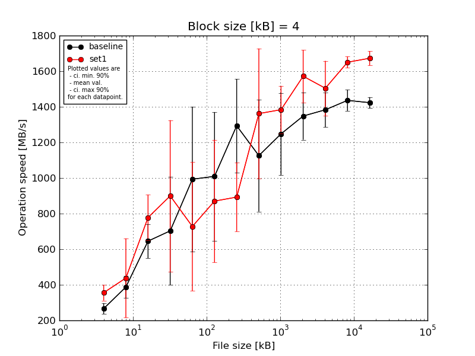
|
Block size [kB] |
File size [kB] |
| 4 |
8 |
16 |
32 |
64 |
128 |
256 |
512 |
1024 |
2048 |
4096 |
8192 |
16384 |
| baseline | 4 | 298.95 | 432.26 | 713.86 | 951.14 | 1298.99 | 1486.05 | 1498.38 | 1683.37 | 1142.61 | 1505.0 | 1480.93 | 1505.17 | 1466.29 |
| 4 | 241.63 | 432.26 | 472.14 | 652.73 | 1249.46 | 946.7 | 1024.19 | 1130.66 | 1069.48 | 1339.65 | 1261.46 | 1436.79 | 1383.12 |
| 4 | 260.87 | 438.04 | 713.86 | 190.57 | 1255.44 | 1214.17 | 1381.88 | 1037.27 | 1655.99 | 1473.8 | 1429.09 | 1477.08 | 1434.23 |
| 4 | 231.39 | 309.7 | 650.12 | 979.57 | 865.72 | 933.22 | 1582.03 | 934.64 | 1095.46 | 1221.79 | 1285.33 | 1417.96 | 1432.27 |
| 4 | 298.95 | 325.06 | 676.98 | 741.33 | 295.94 | 466.53 | 980.16 | 842.97 | 1275.71 | 1200.46 | 1459.42 | 1343.64 | 1399.94 |
| mean val. |
266.36 |
387.47 |
645.39 |
703.07 |
993.11 |
1009.33 |
1293.33 |
1125.78 |
1247.85 |
1348.14 |
1383.25 |
1436.13 |
1423.17 |
| standard dev. |
31.58 |
64.25 |
100.51 |
318.06 |
427.31 |
378.67 |
275.56 |
329.88 |
241.59 |
139.86 |
102.3 |
61.9 |
32.43 |
| ci. min. 90% |
236.25 |
326.21 |
549.56 |
399.83 |
585.72 |
648.31 |
1030.61 |
811.28 |
1017.52 |
1214.8 |
1285.71 |
1377.11 |
1392.25 |
| ci. max 90% |
296.46 |
448.72 |
741.22 |
1006.3 |
1400.5 |
1370.36 |
1556.05 |
1440.28 |
1478.18 |
1481.48 |
1480.78 |
1495.14 |
1454.09 |
| geom. mean |
264.86 |
382.99 |
638.22 |
612.09 |
878.09 |
942.49 |
1268.81 |
1092.37 |
1231.11 |
1342.34 |
1380.17 |
1435.04 |
1422.88 |
| median |
260.87 |
432.26 |
676.98 |
741.33 |
1249.46 |
946.7 |
1381.88 |
1037.27 |
1142.61 |
1339.65 |
1429.09 |
1436.79 |
1432.27 |
| first quartile |
241.63 |
325.06 |
650.12 |
652.73 |
865.72 |
933.22 |
1024.19 |
934.64 |
1095.46 |
1221.79 |
1285.33 |
1417.96 |
1399.94 |
| third quartile |
298.95 |
432.26 |
713.86 |
951.14 |
1255.44 |
1214.17 |
1498.38 |
1130.66 |
1275.71 |
1473.8 |
1459.42 |
1477.08 |
1434.23 |
| minimum |
231.39 |
309.7 |
472.14 |
190.57 |
295.94 |
466.53 |
980.16 |
842.97 |
1069.48 |
1200.46 |
1261.46 |
1343.64 |
1383.12 |
| maximum |
298.95 |
438.04 |
713.86 |
979.57 |
1298.99 |
1486.05 |
1582.03 |
1683.37 |
1655.99 |
1505.0 |
1480.93 |
1505.17 |
1466.29 |
| set1 | 4 | 391.91 | 644.97 | 925.58 | 1250.62 | 318.99 | 1127.97 | 1041.49 | 1623.43 | 1312.03 | 1528.03 | 1727.86 | 1680.34 | 1711.05 |
| 4 | 391.91 | 52.78 | 676.98 | 869.14 | 1041.06 | 461.19 | 663.32 | 1323.29 | 1270.69 | 1355.89 | 1530.79 | 1651.56 | 1631.32 |
| 4 | 357.68 | 462.79 | 925.58 | 892.83 | 960.92 | 488.25 | 1033.28 | 1724.91 | 1587.06 | 1755.74 | 1282.09 | 1685.24 | 1724.11 |
| 4 | 278.61 | 597.89 | 684.05 | 184.92 | 309.2 | 1137.76 | 679.21 | 740.83 | 1472.3 | 1680.48 | 1532.61 | 1623.75 | 1638.53 |
| 4 | 357.68 | 432.26 | 676.98 | 1300.24 | 1009.0 | 1135.3 | 1046.69 | 1396.42 | 1277.27 | 1538.68 | 1448.21 | 1610.34 | 1659.39 |
| mean val. |
355.56 |
438.14 |
777.83 |
899.55 |
727.83 |
870.1 |
892.8 |
1361.77 |
1383.87 |
1571.76 |
1504.31 |
1650.25 |
1672.88 |
| standard dev. |
46.29 |
233.15 |
134.9 |
445.95 |
378.78 |
361.07 |
202.36 |
383.59 |
140.04 |
154.33 |
161.25 |
33.26 |
42.34 |
| ci. min. 90% |
311.42 |
215.85 |
649.22 |
474.39 |
366.71 |
525.86 |
699.87 |
996.06 |
1250.36 |
1424.62 |
1350.58 |
1618.53 |
1632.51 |
| ci. max 90% |
399.7 |
660.42 |
906.45 |
1324.71 |
1088.96 |
1214.34 |
1085.73 |
1727.49 |
1517.38 |
1718.91 |
1658.05 |
1681.96 |
1713.25 |
| geom. mean |
352.92 |
332.63 |
768.8 |
747.48 |
630.4 |
800.2 |
873.14 |
1308.33 |
1378.39 |
1565.6 |
1497.34 |
1649.98 |
1672.45 |
| median |
357.68 |
462.79 |
684.05 |
892.83 |
960.92 |
1127.97 |
1033.28 |
1396.42 |
1312.03 |
1538.68 |
1530.79 |
1651.56 |
1659.39 |
| first quartile |
357.68 |
432.26 |
676.98 |
869.14 |
318.99 |
488.25 |
679.21 |
1323.29 |
1277.27 |
1528.03 |
1448.21 |
1623.75 |
1638.53 |
| third quartile |
391.91 |
597.89 |
925.58 |
1250.62 |
1009.0 |
1135.3 |
1041.49 |
1623.43 |
1472.3 |
1680.48 |
1532.61 |
1680.34 |
1711.05 |
| minimum |
278.61 |
52.78 |
676.98 |
184.92 |
309.2 |
461.19 |
663.32 |
740.83 |
1270.69 |
1355.89 |
1282.09 |
1610.34 |
1631.32 |
| maximum |
391.91 |
644.97 |
925.58 |
1300.24 |
1041.06 |
1137.76 |
1046.69 |
1724.91 |
1587.06 |
1755.74 |
1727.86 |
1685.24 |
1724.11 |
| baseline set1 difference |
33.49 % |
13.08 % |
20.52 % |
27.95 % |
-26.71 % |
-13.8 % |
-30.97 % |
20.96 % |
10.9 % |
16.59 % |
8.75 % |
14.91 % |
17.55 % |
| ttest p-value |
0.0074 |
0.6519 |
0.1164 |
0.4457 |
0.3293 |
0.5683 |
0.0307 |
0.3274 |
0.3078 |
0.0431 |
0.1941 |
0.0001 |
0.0 |
| ttest equality |
DIFF |
SAME |
SAME |
SAME |
SAME |
SAME |
DIFF |
SAME |
SAME |
DIFF |
SAME |
DIFF |
DIFF |
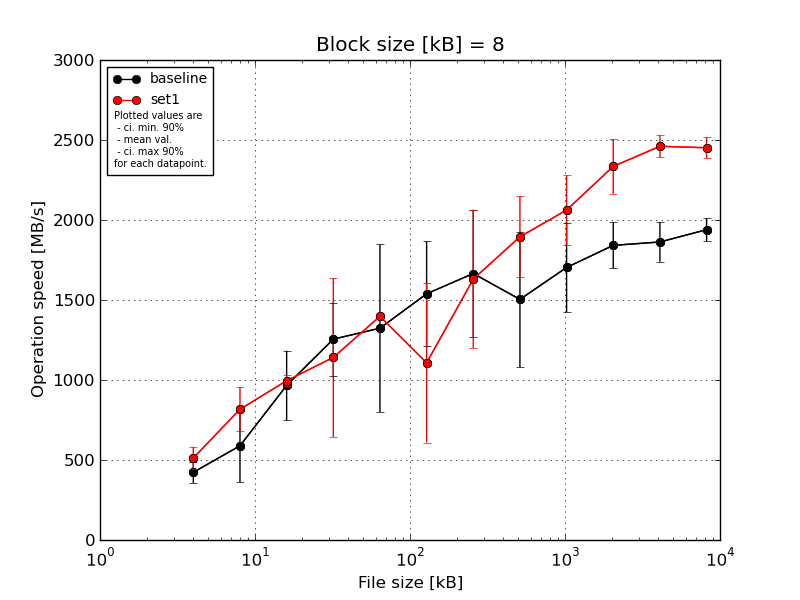
|
Block size [kB] |
File size [kB] |
| 8 |
16 |
32 |
64 |
128 |
256 |
512 |
1024 |
2048 |
4096 |
8192 |
16384 |
| baseline | 8 | 490.5 | 713.86 | 1151.72 | 1331.99 | 1860.46 | 2064.92 | 2222.02 | 2252.81 | 2043.11 | 2004.97 | 2042.91 | 2044.21 |
| 8 | 373.19 | 556.31 | 709.24 | 993.7 | 1237.09 | 1275.94 | 1385.35 | 1336.7 | 1683.51 | 1853.47 | 1715.57 | 1906.57 |
| 8 | 462.79 | 782.0 | 1122.14 | 1449.87 | 1815.37 | 1713.9 | 2009.14 | 1505.6 | 1950.93 | 1971.28 | 1911.63 | 1986.07 |
| 8 | 325.06 | 186.28 | 724.93 | 1009.0 | 516.64 | 1329.32 | 1366.4 | 1335.0 | 1453.63 | 1666.09 | 1880.14 | 1911.34 |
| 8 | 462.79 | 706.16 | 1122.14 | 1491.1 | 1189.38 | 1309.4 | 1344.5 | 1089.48 | 1384.99 | 1711.64 | 1762.52 | 1849.91 |
| mean val. |
422.86 |
588.92 |
966.03 |
1255.13 |
1323.79 |
1538.7 |
1665.48 |
1503.92 |
1703.23 |
1841.49 |
1862.55 |
1939.62 |
| standard dev. |
70.35 |
239.69 |
227.64 |
238.98 |
549.26 |
343.9 |
417.97 |
444.16 |
291.91 |
151.11 |
129.29 |
75.89 |
| ci. min. 90% |
355.79 |
360.4 |
749.0 |
1027.29 |
800.13 |
1210.83 |
1266.99 |
1080.46 |
1424.93 |
1697.42 |
1739.29 |
1867.27 |
| ci. max 90% |
489.93 |
817.44 |
1183.07 |
1482.97 |
1847.45 |
1866.56 |
2063.97 |
1927.37 |
1981.53 |
1985.56 |
1985.81 |
2011.97 |
| geom. mean |
417.89 |
527.52 |
942.99 |
1236.22 |
1207.53 |
1510.37 |
1625.89 |
1458.26 |
1683.18 |
1836.5 |
1858.99 |
1938.44 |
| median |
462.79 |
706.16 |
1122.14 |
1331.99 |
1237.09 |
1329.32 |
1385.35 |
1336.7 |
1683.51 |
1853.47 |
1880.14 |
1911.34 |
| first quartile |
373.19 |
556.31 |
724.93 |
1009.0 |
1189.38 |
1309.4 |
1366.4 |
1335.0 |
1453.63 |
1711.64 |
1762.52 |
1906.57 |
| third quartile |
462.79 |
713.86 |
1122.14 |
1449.87 |
1815.37 |
1713.9 |
2009.14 |
1505.6 |
1950.93 |
1971.28 |
1911.63 |
1986.07 |
| minimum |
325.06 |
186.28 |
709.24 |
993.7 |
516.64 |
1275.94 |
1344.5 |
1089.48 |
1384.99 |
1666.09 |
1715.57 |
1849.91 |
| maximum |
490.5 |
782.0 |
1151.72 |
1491.1 |
1860.46 |
2064.92 |
2222.02 |
2252.81 |
2043.11 |
2004.97 |
2042.91 |
2044.21 |
| set1 | 8 | 609.01 | 966.53 | 1009.75 | 1785.65 | 1406.33 | 822.54 | 1285.17 | 1766.17 | 2389.37 | 2631.8 | 2511.03 | 2462.64 |
| 8 | 490.5 | 746.38 | 1041.86 | 1249.46 | 1402.57 | 748.02 | 1672.63 | 1647.53 | 1746.97 | 2191.72 | 2346.82 | 2346.73 |
| 8 | 462.79 | 676.98 | 944.28 | 1155.81 | 1387.72 | 737.5 | 1695.62 | 1694.8 | 2057.64 | 2243.6 | 2520.46 | 2497.28 |
| 8 | 432.26 | 713.86 | 979.57 | 1181.86 | 1406.33 | 1274.39 | 1173.69 | 2192.75 | 2043.11 | 2236.13 | 2493.68 | 2427.89 |
| 8 | 566.86 | 980.99 | 1002.04 | 330.65 | 1387.72 | 1953.36 | 2325.5 | 2174.56 | 2074.43 | 2372.41 | 2431.69 | 2523.29 |
| mean val. |
512.28 |
816.95 |
995.5 |
1140.69 |
1398.13 |
1107.16 |
1630.52 |
1895.16 |
2062.3 |
2335.13 |
2460.74 |
2451.56 |
| standard dev. |
73.59 |
145.33 |
36.3 |
521.03 |
9.63 |
522.18 |
451.93 |
266.8 |
227.46 |
178.99 |
72.46 |
68.75 |
| ci. min. 90% |
442.12 |
678.39 |
960.89 |
643.94 |
1388.95 |
609.32 |
1199.65 |
1640.8 |
1845.45 |
2164.48 |
2391.65 |
2386.01 |
| ci. max 90% |
582.44 |
955.5 |
1030.11 |
1637.43 |
1407.31 |
1605.0 |
2061.39 |
2149.52 |
2279.16 |
2505.78 |
2529.82 |
2517.11 |
| geom. mean |
508.13 |
806.87 |
994.97 |
1001.54 |
1398.11 |
1024.67 |
1583.26 |
1880.48 |
2052.23 |
2329.88 |
2459.87 |
2450.78 |
| median |
490.5 |
746.38 |
1002.04 |
1181.86 |
1402.57 |
822.54 |
1672.63 |
1766.17 |
2057.64 |
2243.6 |
2493.68 |
2462.64 |
| first quartile |
462.79 |
713.86 |
979.57 |
1155.81 |
1387.72 |
748.02 |
1285.17 |
1694.8 |
2043.11 |
2236.13 |
2431.69 |
2427.89 |
| third quartile |
566.86 |
966.53 |
1009.75 |
1249.46 |
1406.33 |
1274.39 |
1695.62 |
2174.56 |
2074.43 |
2372.41 |
2511.03 |
2497.28 |
| minimum |
432.26 |
676.98 |
944.28 |
330.65 |
1387.72 |
737.5 |
1173.69 |
1647.53 |
1746.97 |
2191.72 |
2346.82 |
2346.73 |
| maximum |
609.01 |
980.99 |
1041.86 |
1785.65 |
1406.33 |
1953.36 |
2325.5 |
2192.75 |
2389.37 |
2631.8 |
2520.46 |
2523.29 |
| baseline set1 difference |
21.15 % |
38.72 % |
3.05 % |
-9.12 % |
5.62 % |
-28.05 % |
-2.1 % |
26.01 % |
21.08 % |
26.81 % |
32.12 % |
26.39 % |
| ttest p-value |
0.0851 |
0.1064 |
0.7823 |
0.6671 |
0.7699 |
0.1613 |
0.9021 |
0.1298 |
0.0619 |
0.0015 |
0.0 |
0.0 |
| ttest equality |
DIFF |
SAME |
SAME |
SAME |
SAME |
SAME |
SAME |
SAME |
DIFF |
DIFF |
DIFF |
DIFF |
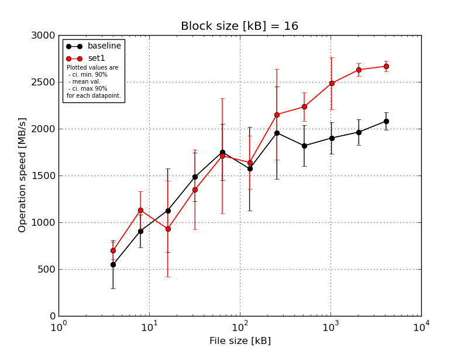
|
Block size [kB] |
File size [kB] |
| 16 |
32 |
64 |
128 |
256 |
512 |
1024 |
2048 |
4096 |
8192 |
16384 |
| baseline | 16 | 746.38 | 1122.14 | 1525.82 | 1928.91 | 1893.4 | 2359.52 | 2468.97 | 2139.51 | 2142.46 | 2140.8 | 2221.65 |
| 16 | 556.31 | 694.22 | 1135.78 | 1288.79 | 1471.05 | 1123.99 | 2119.61 | 1673.77 | 1747.48 | 1893.5 | 1995.28 |
| 16 | 746.38 | 846.69 | 1491.1 | 1561.28 | 1866.44 | 1351.43 | 2380.68 | 1976.21 | 2039.83 | 2093.64 | 2133.03 |
| 16 | 90.29 | 1076.07 | 1116.43 | 1358.94 | 2136.44 | 1511.13 | 1396.79 | 1696.45 | 1779.36 | 1861.36 | 1992.02 |
| 16 | 602.32 | 800.17 | 365.71 | 1288.79 | 1389.2 | 1515.5 | 1414.22 | 1606.15 | 1794.39 | 1830.69 | 2064.26 |
| mean val. |
548.33 |
907.86 |
1126.97 |
1485.34 |
1751.31 |
1572.31 |
1956.06 |
1818.42 |
1900.7 |
1964.0 |
2081.25 |
| standard dev. |
269.82 |
183.84 |
466.74 |
271.92 |
312.82 |
468.09 |
518.77 |
228.5 |
178.4 |
142.6 |
97.51 |
| ci. min. 90% |
291.09 |
732.58 |
681.98 |
1226.1 |
1453.06 |
1126.04 |
1461.46 |
1600.56 |
1730.62 |
1828.05 |
1988.28 |
| ci. max 90% |
805.58 |
1083.13 |
1571.95 |
1744.59 |
2049.55 |
2018.59 |
2450.65 |
2036.27 |
2070.79 |
2099.95 |
2174.21 |
| geom. mean |
441.92 |
893.01 |
1010.77 |
1467.14 |
1728.49 |
1523.52 |
1897.69 |
1807.31 |
1894.17 |
1959.92 |
2079.44 |
| median |
602.32 |
846.69 |
1135.78 |
1358.94 |
1866.44 |
1511.13 |
2119.61 |
1696.45 |
1794.39 |
1893.5 |
2064.26 |
| first quartile |
556.31 |
800.17 |
1116.43 |
1288.79 |
1471.05 |
1351.43 |
1414.22 |
1673.77 |
1779.36 |
1861.36 |
1995.28 |
| third quartile |
746.38 |
1076.07 |
1491.1 |
1561.28 |
1893.4 |
1515.5 |
2380.68 |
1976.21 |
2039.83 |
2093.64 |
2133.03 |
| minimum |
90.29 |
694.22 |
365.71 |
1288.79 |
1389.2 |
1123.99 |
1396.79 |
1606.15 |
1747.48 |
1830.69 |
1992.02 |
| maximum |
746.38 |
1122.14 |
1525.82 |
1928.91 |
2136.44 |
2359.52 |
2468.97 |
2139.51 |
2142.46 |
2140.8 |
2221.65 |
| set1 | 16 | 864.53 | 1353.97 | 345.47 | 1507.42 | 889.52 | 1408.61 | 2985.68 | 2512.46 | 2846.58 | 2674.55 | 2742.52 |
| 16 | 676.98 | 1009.75 | 1352.61 | 1604.28 | 1786.92 | 1817.59 | 2262.54 | 2169.39 | 2329.58 | 2626.4 | 2664.44 |
| 16 | 650.12 | 972.3 | 1249.46 | 550.83 | 2662.67 | 1237.4 | 1979.56 | 2200.11 | 2747.3 | 2682.04 | 2688.14 |
| 16 | 650.12 | 944.28 | 1359.63 | 1507.42 | 1436.79 | 1899.93 | 1785.72 | 2176.14 | 2325.39 | 2656.98 | 2665.71 |
| 16 | 650.12 | 1368.1 | 347.3 | 1580.11 | 1774.82 | 1838.31 | 1748.5 | 2114.17 | 2174.96 | 2510.09 | 2579.74 |
| mean val. |
698.37 |
1129.68 |
930.89 |
1350.01 |
1710.15 |
1640.37 |
2152.4 |
2234.45 |
2484.76 |
2630.01 |
2668.11 |
| standard dev. |
93.61 |
212.53 |
535.36 |
448.84 |
645.28 |
297.51 |
508.42 |
158.56 |
293.81 |
70.38 |
58.66 |
| ci. min. 90% |
609.13 |
927.06 |
420.48 |
922.09 |
1094.94 |
1356.72 |
1667.68 |
2083.28 |
2204.65 |
2562.92 |
2612.18 |
| ci. max 90% |
787.62 |
1332.3 |
1441.3 |
1777.93 |
2325.35 |
1924.01 |
2637.12 |
2385.63 |
2764.88 |
2697.11 |
2724.04 |
| geom. mean |
693.85 |
1114.22 |
772.83 |
1259.77 |
1609.26 |
1617.3 |
2109.29 |
2230.19 |
2471.1 |
2629.24 |
2667.59 |
| median |
650.12 |
1009.75 |
1249.46 |
1507.42 |
1774.82 |
1817.59 |
1979.56 |
2176.14 |
2329.58 |
2656.98 |
2665.71 |
| first quartile |
650.12 |
972.3 |
347.3 |
1507.42 |
1436.79 |
1408.61 |
1785.72 |
2169.39 |
2325.39 |
2626.4 |
2664.44 |
| third quartile |
676.98 |
1353.97 |
1352.61 |
1580.11 |
1786.92 |
1838.31 |
2262.54 |
2200.11 |
2747.3 |
2674.55 |
2688.14 |
| minimum |
650.12 |
944.28 |
345.47 |
550.83 |
889.52 |
1237.4 |
1748.5 |
2114.17 |
2174.96 |
2510.09 |
2579.74 |
| maximum |
864.53 |
1368.1 |
1359.63 |
1604.28 |
2662.67 |
1899.93 |
2985.68 |
2512.46 |
2846.58 |
2682.04 |
2742.52 |
| baseline set1 difference |
27.36 % |
24.43 % |
-17.4 % |
-9.11 % |
-2.35 % |
4.33 % |
10.04 % |
22.88 % |
30.73 % |
33.91 % |
28.2 % |
| ttest p-value |
0.2739 |
0.1155 |
0.5542 |
0.58 |
0.901 |
0.7907 |
0.5623 |
0.0102 |
0.0052 |
0.0 |
0.0 |
| ttest equality |
SAME |
SAME |
SAME |
SAME |
SAME |
SAME |
SAME |
DIFF |
DIFF |
DIFF |
DIFF |
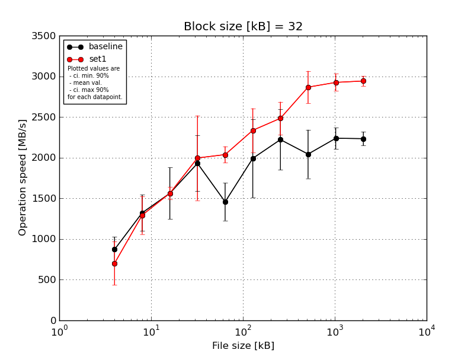
|
Block size [kB] |
File size [kB] |
| 32 |
64 |
128 |
256 |
512 |
1024 |
2048 |
4096 |
8192 |
16384 |
| baseline | 32 | 1041.86 | 1457.93 | 1950.43 | 2295.45 | 1543.38 | 1841.38 | 2269.76 | 2520.69 | 2292.31 | 2326.95 |
| 32 | 709.24 | 1062.15 | 1263.94 | 1533.44 | 1165.86 | 1474.89 | 2574.13 | 1798.62 | 2349.45 | 2286.05 |
| 32 | 1041.86 | 1491.1 | 1894.06 | 2017.25 | 1234.49 | 2531.56 | 2621.6 | 2206.42 | 2331.66 | 2280.15 |
| 32 | 741.33 | 1075.22 | 1373.18 | 1572.54 | 1677.98 | 1590.07 | 1834.86 | 1864.8 | 2198.44 | 2136.76 |
| 32 | 825.36 | 1525.82 | 1327.96 | 2231.93 | 1665.99 | 2519.4 | 1808.35 | 1829.02 | 2016.64 | 2139.01 |
| mean val. |
871.93 |
1322.44 |
1561.92 |
1930.12 |
1457.54 |
1991.46 |
2221.74 |
2043.91 |
2237.7 |
2233.78 |
| standard dev. |
160.81 |
232.94 |
331.82 |
359.64 |
241.99 |
505.2 |
389.53 |
313.11 |
136.66 |
89.38 |
| ci. min. 90% |
718.61 |
1100.36 |
1245.56 |
1587.24 |
1226.82 |
1509.81 |
1850.37 |
1745.39 |
2107.41 |
2148.57 |
| ci. max 90% |
1025.25 |
1544.52 |
1878.27 |
2273.0 |
1688.25 |
2473.11 |
2593.12 |
2342.43 |
2368.0 |
2319.0 |
| geom. mean |
860.23 |
1305.22 |
1534.73 |
1902.46 |
1440.83 |
1940.89 |
2193.88 |
2025.81 |
2234.24 |
2232.34 |
| median |
825.36 |
1457.93 |
1373.18 |
2017.25 |
1543.38 |
1841.38 |
2269.76 |
1864.8 |
2292.31 |
2280.15 |
| first quartile |
741.33 |
1075.22 |
1327.96 |
1572.54 |
1234.49 |
1590.07 |
1834.86 |
1829.02 |
2198.44 |
2139.01 |
| third quartile |
1041.86 |
1491.1 |
1894.06 |
2231.93 |
1665.99 |
2519.4 |
2574.13 |
2206.42 |
2331.66 |
2286.05 |
| minimum |
709.24 |
1062.15 |
1263.94 |
1533.44 |
1165.86 |
1474.89 |
1808.35 |
1798.62 |
2016.64 |
2136.76 |
| maximum |
1041.86 |
1525.82 |
1950.43 |
2295.45 |
1677.98 |
2531.56 |
2621.6 |
2520.69 |
2349.45 |
2326.95 |
| set1 | 32 | 200.47 | 1203.57 | 1565.95 | 1907.17 | 2191.83 | 2531.56 | 2763.22 | 3108.15 | 2916.3 | 3046.41 |
| 32 | 841.25 | 1226.08 | 1524.95 | 1524.52 | 2099.66 | 2160.0 | 2349.88 | 3027.94 | 2835.95 | 2934.13 |
| 32 | 800.17 | 1135.78 | 1542.9 | 1479.36 | 1943.96 | 1919.76 | 2375.16 | 2580.79 | 3111.56 | 2948.31 |
| 32 | 846.69 | 1176.56 | 1692.31 | 2775.44 | 1999.56 | 2543.84 | 2655.63 | 2787.47 | 2850.89 | 2883.45 |
| 32 | 820.2 | 1726.84 | 1486.05 | 2295.45 | 1953.01 | 2525.46 | 2275.3 | 2828.83 | 2909.22 | 2899.02 |
| mean val. |
701.76 |
1293.77 |
1562.43 |
1996.39 |
2037.6 |
2336.13 |
2483.84 |
2866.63 |
2924.79 |
2942.26 |
| standard dev. |
280.83 |
244.42 |
78.26 |
546.42 |
106.08 |
283.54 |
212.61 |
208.42 |
110.17 |
63.79 |
| ci. min. 90% |
434.02 |
1060.74 |
1487.82 |
1475.44 |
1936.47 |
2065.8 |
2281.14 |
2667.93 |
2819.75 |
2881.44 |
| ci. max 90% |
969.5 |
1526.79 |
1637.05 |
2517.34 |
2138.73 |
2606.45 |
2686.54 |
3065.34 |
3029.82 |
3003.09 |
| geom. mean |
622.82 |
1277.7 |
1560.91 |
1938.92 |
2035.43 |
2321.58 |
2476.69 |
2860.51 |
2923.17 |
2941.72 |
| median |
820.2 |
1203.57 |
1542.9 |
1907.17 |
1999.56 |
2525.46 |
2375.16 |
2828.83 |
2909.22 |
2934.13 |
| first quartile |
800.17 |
1176.56 |
1524.95 |
1524.52 |
1953.01 |
2160.0 |
2349.88 |
2787.47 |
2850.89 |
2899.02 |
| third quartile |
841.25 |
1226.08 |
1565.95 |
2295.45 |
2099.66 |
2531.56 |
2655.63 |
3027.94 |
2916.3 |
2948.31 |
| minimum |
200.47 |
1135.78 |
1486.05 |
1479.36 |
1943.96 |
1919.76 |
2275.3 |
2580.79 |
2835.95 |
2883.45 |
| maximum |
846.69 |
1726.84 |
1692.31 |
2775.44 |
2191.83 |
2543.84 |
2763.22 |
3108.15 |
3111.56 |
3046.41 |
| baseline set1 difference |
-19.52 % |
-2.17 % |
0.03 % |
3.43 % |
39.8 % |
17.31 % |
11.8 % |
40.25 % |
30.7 % |
31.72 % |
| ttest p-value |
0.2735 |
0.8541 |
0.9974 |
0.8265 |
0.0012 |
0.2201 |
0.2232 |
0.0012 |
0.0 |
0.0 |
| ttest equality |
SAME |
SAME |
SAME |
SAME |
DIFF |
SAME |
SAME |
DIFF |
DIFF |
DIFF |

|
Block size [kB] |
File size [kB] |
| 64 |
128 |
256 |
512 |
1024 |
2048 |
4096 |
8192 |
16384 |
32768 |
65536 |
131072 |
262144 |
524288 |
1048576 |
2097152 |
4194304 |
| baseline | 64 | 1359.63 | 1708.86 | 2194.57 | 2485.35 | 2716.86 | 2299.0 | 2374.09 | 2304.28 | 2553.04 | 2483.91 | 2504.98 | 2466.38 | 2504.69 | 2471.93 | 3139.3 | 4404.39 | 4562.24 |
| 64 | 1298.99 | 1225.53 | 1971.73 | 1128.83 | 1818.23 | 1850.24 | 2345.87 | 2133.85 | 2514.12 | 2472.79 | 2455.87 | 2393.87 | 2478.84 | 2401.95 | 3398.56 | 4269.09 | 4543.36 |
| 64 | 1298.99 | 1737.17 | 2102.17 | 2212.64 | 2551.58 | 1930.28 | 2251.13 | 2438.23 | 2396.59 | 2398.98 | 2375.83 | 2443.87 | 2452.76 | 2795.58 | 3527.62 | 4331.67 | 4650.82 |
| 64 | 933.54 | 1137.76 | 1454.73 | 1660.71 | 2638.25 | 1855.56 | 2116.52 | 2121.44 | 2349.44 | 2365.95 | 2457.84 | 2426.17 | 2463.36 | 2493.33 | 3555.32 | 3642.67 | 4636.04 |
| 64 | 975.22 | 1157.87 | 2158.43 | 2380.95 | 1479.05 | 1834.86 | 1975.23 | 1917.64 | 2177.18 | 2424.42 | 2438.0 | 2452.62 | 2445.83 | 2622.45 | 4291.45 | 4470.18 | 4486.52 |
| mean val. |
1173.27 |
1393.44 |
1976.32 |
1973.69 |
2240.79 |
1953.98 |
2212.57 |
2183.09 |
2398.07 |
2429.21 |
2446.5 |
2436.58 |
2469.1 |
2557.05 |
3582.45 |
4223.6 |
4575.8 |
| standard dev. |
201.89 |
302.78 |
303.61 |
569.32 |
556.78 |
196.37 |
166.51 |
197.78 |
148.87 |
49.57 |
46.64 |
27.98 |
23.47 |
155.35 |
429.13 |
333.43 |
67.94 |
| ci. min. 90% |
980.8 |
1104.77 |
1686.87 |
1430.91 |
1709.97 |
1766.77 |
2053.82 |
1994.52 |
2256.14 |
2381.95 |
2402.04 |
2409.91 |
2446.72 |
2408.94 |
3173.32 |
3905.71 |
4511.02 |
| ci. max 90% |
1365.75 |
1682.1 |
2265.78 |
2516.48 |
2771.62 |
2141.2 |
2371.31 |
2371.65 |
2540.0 |
2476.47 |
2490.97 |
2463.25 |
2491.47 |
2705.16 |
3991.58 |
4541.49 |
4640.57 |
| geom. mean |
1158.71 |
1368.1 |
1955.04 |
1896.68 |
2179.54 |
1946.67 |
2207.44 |
2175.88 |
2394.3 |
2428.81 |
2446.15 |
2436.45 |
2469.01 |
2553.36 |
3563.02 |
4212.35 |
4575.39 |
| median |
1298.99 |
1225.53 |
2102.17 |
2212.64 |
2551.58 |
1855.56 |
2251.13 |
2133.85 |
2396.59 |
2424.42 |
2455.87 |
2443.87 |
2463.36 |
2493.33 |
3527.62 |
4331.67 |
4562.24 |
| first quartile |
975.22 |
1157.87 |
1971.73 |
1660.71 |
1818.23 |
1850.24 |
2116.52 |
2121.44 |
2349.44 |
2398.98 |
2438.0 |
2426.17 |
2452.76 |
2471.93 |
3398.56 |
4269.09 |
4543.36 |
| third quartile |
1298.99 |
1708.86 |
2158.43 |
2380.95 |
2638.25 |
1930.28 |
2345.87 |
2304.28 |
2514.12 |
2472.79 |
2457.84 |
2452.62 |
2478.84 |
2622.45 |
3555.32 |
4404.39 |
4636.04 |
| minimum |
933.54 |
1137.76 |
1454.73 |
1128.83 |
1479.05 |
1834.86 |
1975.23 |
1917.64 |
2177.18 |
2365.95 |
2375.83 |
2393.87 |
2445.83 |
2401.95 |
3139.3 |
3642.67 |
4486.52 |
| maximum |
1359.63 |
1737.17 |
2194.57 |
2485.35 |
2716.86 |
2299.0 |
2374.09 |
2438.23 |
2553.04 |
2483.91 |
2504.98 |
2466.38 |
2504.69 |
2795.58 |
4291.45 |
4470.18 |
4650.82 |
| set1 | 64 | 960.92 | 1263.94 | 2231.93 | 2253.05 | 3424.46 | 2797.32 | 3262.27 | 3299.09 | 3256.0 | 3243.48 | 3259.82 | 3321.67 | 3256.75 | 3249.37 | 4511.65 | 4597.88 | 5788.95 |
| 64 | 930.23 | 1957.72 | 1396.6 | 2014.93 | 2499.87 | 2433.03 | 2706.52 | 3032.54 | 3081.1 | 3179.02 | 3247.71 | 3209.71 | 3252.33 | 3291.25 | 4451.84 | 4696.96 | 5711.61 |
| 64 | 1418.48 | 953.59 | 811.71 | 2040.42 | 2154.45 | 2433.03 | 3003.01 | 3406.95 | 3278.75 | 3245.44 | 3258.67 | 3194.18 | 3236.48 | 3245.62 | 4582.09 | 5253.05 | 5459.61 |
| 64 | 917.21 | 1276.24 | 801.17 | 2703.19 | 2499.87 | 2496.75 | 2984.84 | 3326.57 | 2970.63 | 3198.72 | 3225.0 | 3262.64 | 3270.98 | 3272.57 | 4407.18 | 5248.36 | 5444.77 |
| 64 | 933.54 | 984.01 | 1374.63 | 1305.98 | 2597.4 | 2436.56 | 2998.71 | 2816.91 | 3073.9 | 3073.4 | 3265.29 | 3153.49 | 3284.7 | 3595.96 | 4216.09 | 5759.25 | 5483.74 |
| mean val. |
1032.08 |
1287.1 |
1323.21 |
2063.51 |
2635.21 |
2519.34 |
2991.07 |
3176.41 |
3132.08 |
3188.01 |
3251.3 |
3228.34 |
3260.25 |
3330.95 |
4433.77 |
5111.1 |
5577.74 |
| standard dev. |
216.59 |
404.19 |
584.8 |
505.44 |
472.26 |
157.74 |
196.69 |
245.3 |
131.26 |
70.19 |
16.02 |
65.2 |
18.39 |
149.29 |
138.27 |
472.76 |
160.47 |
| ci. min. 90% |
825.58 |
901.75 |
765.67 |
1581.64 |
2184.97 |
2368.95 |
2803.54 |
2942.54 |
3006.93 |
3121.09 |
3236.02 |
3166.18 |
3242.71 |
3188.62 |
4301.94 |
4660.38 |
5424.75 |
| ci. max 90% |
1238.57 |
1672.45 |
1880.75 |
2545.39 |
3085.46 |
2669.73 |
3178.6 |
3410.28 |
3257.22 |
3254.93 |
3266.57 |
3290.5 |
3277.78 |
3473.28 |
4565.6 |
5561.82 |
5730.73 |
| geom. mean |
1016.58 |
1242.66 |
1227.48 |
2008.69 |
2604.12 |
2515.58 |
2985.86 |
3168.6 |
3129.88 |
3187.39 |
3251.26 |
3227.81 |
3260.21 |
3328.37 |
4432.02 |
5093.72 |
5575.9 |
| median |
933.54 |
1263.94 |
1374.63 |
2040.42 |
2499.87 |
2436.56 |
2998.71 |
3299.09 |
3081.1 |
3198.72 |
3258.67 |
3209.71 |
3256.75 |
3272.57 |
4451.84 |
5248.36 |
5483.74 |
| first quartile |
930.23 |
984.01 |
811.71 |
2014.93 |
2499.87 |
2433.03 |
2984.84 |
3032.54 |
3073.9 |
3179.02 |
3247.71 |
3194.18 |
3252.33 |
3249.37 |
4407.18 |
4696.96 |
5459.61 |
| third quartile |
960.92 |
1276.24 |
1396.6 |
2253.05 |
2597.4 |
2496.75 |
3003.01 |
3326.57 |
3256.0 |
3243.48 |
3259.82 |
3262.64 |
3270.98 |
3291.25 |
4511.65 |
5253.05 |
5711.61 |
| minimum |
917.21 |
953.59 |
801.17 |
1305.98 |
2154.45 |
2433.03 |
2706.52 |
2816.91 |
2970.63 |
3073.4 |
3225.0 |
3153.49 |
3236.48 |
3245.62 |
4216.09 |
4597.88 |
5444.77 |
| maximum |
1418.48 |
1957.72 |
2231.93 |
2703.19 |
3424.46 |
2797.32 |
3262.27 |
3406.95 |
3278.75 |
3245.44 |
3265.29 |
3321.67 |
3284.7 |
3595.96 |
4582.09 |
5759.25 |
5788.95 |
| baseline set1 difference |
-12.03 % |
-7.63 % |
-33.05 % |
4.55 % |
17.6 % |
28.93 % |
35.19 % |
45.5 % |
30.61 % |
31.24 % |
32.9 % |
32.49 % |
32.04 % |
30.27 % |
23.76 % |
21.01 % |
21.9 % |
| ttest p-value |
0.3174 |
0.6503 |
0.0575 |
0.7986 |
0.2615 |
0.001 |
0.0001 |
0.0001 |
0.0 |
0.0 |
0.0 |
0.0 |
0.0 |
0.0 |
0.0029 |
0.0089 |
0.0 |
| ttest equality |
SAME |
SAME |
DIFF |
SAME |
SAME |
DIFF |
DIFF |
DIFF |
DIFF |
DIFF |
DIFF |
DIFF |
DIFF |
DIFF |
DIFF |
DIFF |
DIFF |
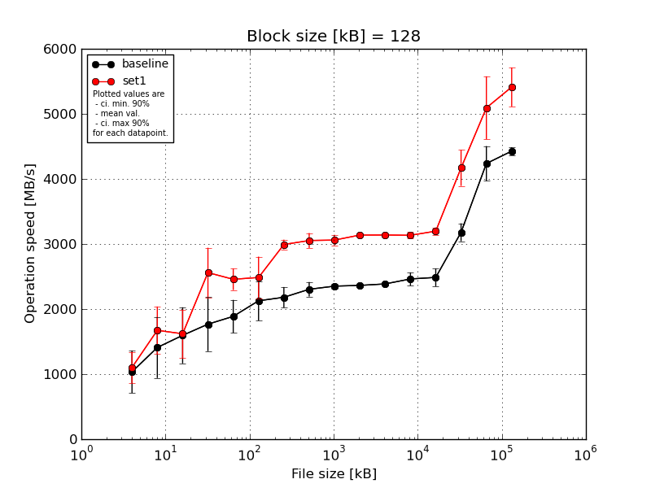
|
Block size [kB] |
File size [kB] |
| 128 |
256 |
512 |
1024 |
2048 |
4096 |
8192 |
16384 |
32768 |
65536 |
131072 |
262144 |
524288 |
1048576 |
2097152 |
4194304 |
| baseline | 128 | 1524.95 | 1910.65 | 2250.63 | 2493.93 | 2185.78 | 2457.19 | 2334.42 | 2439.01 | 2411.83 | 2390.84 | 2394.45 | 2644.6 | 2365.35 | 3302.67 | 4441.44 | 4484.8 |
| 128 | 1059.58 | 1307.77 | 1077.78 | 1512.66 | 1727.19 | 2231.07 | 2062.37 | 2399.85 | 2350.0 | 2395.55 | 2404.48 | 2438.0 | 2587.99 | 3133.86 | 4113.4 | 4408.39 |
| 128 | 560.25 | 1849.97 | 1319.12 | 1763.2 | 2157.67 | 2362.39 | 2386.72 | 2305.77 | 2338.83 | 2342.7 | 2407.24 | 2404.25 | 2559.79 | 3244.38 | 4569.69 | 4501.97 |
| 128 | 1016.44 | 704.31 | 1533.22 | 1706.52 | 1760.54 | 1733.22 | 2044.9 | 2200.52 | 2349.47 | 2339.0 | 2378.25 | 2448.75 | 2299.62 | 3270.32 | 4208.29 | 4388.19 |
| 128 | 1016.44 | 1275.94 | 1798.89 | 1362.31 | 1607.69 | 1852.65 | 2077.83 | 2175.69 | 2311.99 | 2348.87 | 2349.23 | 2377.75 | 2620.63 | 2946.45 | 3852.88 | 4353.56 |
| mean val. |
1035.54 |
1409.73 |
1595.93 |
1767.72 |
1887.77 |
2127.3 |
2181.25 |
2304.17 |
2352.42 |
2363.39 |
2386.73 |
2462.67 |
2486.68 |
3179.54 |
4237.14 |
4427.38 |
| standard dev. |
341.59 |
492.61 |
452.45 |
436.05 |
265.56 |
318.43 |
165.15 |
116.82 |
36.62 |
27.48 |
23.84 |
105.51 |
144.27 |
144.94 |
281.13 |
63.65 |
| ci. min. 90% |
709.87 |
940.08 |
1164.56 |
1352.0 |
1634.59 |
1823.71 |
2023.8 |
2192.79 |
2317.51 |
2337.19 |
2364.0 |
2362.08 |
2349.13 |
3041.35 |
3969.11 |
4366.7 |
| ci. max 90% |
1361.2 |
1879.38 |
2027.29 |
2183.45 |
2140.95 |
2430.89 |
2338.7 |
2415.54 |
2387.33 |
2389.59 |
2409.46 |
2563.26 |
2624.23 |
3317.72 |
4505.16 |
4488.07 |
| geom. mean |
986.71 |
1329.52 |
1545.77 |
1729.27 |
1873.08 |
2107.61 |
2176.34 |
2301.8 |
2352.2 |
2363.26 |
2386.63 |
2460.92 |
2483.28 |
3176.82 |
4229.61 |
4427.02 |
| median |
1016.44 |
1307.77 |
1533.22 |
1706.52 |
1760.54 |
2231.07 |
2077.83 |
2305.77 |
2349.47 |
2348.87 |
2394.45 |
2438.0 |
2559.79 |
3244.38 |
4208.29 |
4408.39 |
| first quartile |
1016.44 |
1275.94 |
1319.12 |
1512.66 |
1727.19 |
1852.65 |
2062.37 |
2200.52 |
2338.83 |
2342.7 |
2378.25 |
2404.25 |
2365.35 |
3133.86 |
4113.4 |
4388.19 |
| third quartile |
1059.58 |
1849.97 |
1798.89 |
1763.2 |
2157.67 |
2362.39 |
2334.42 |
2399.85 |
2350.0 |
2390.84 |
2404.48 |
2448.75 |
2587.99 |
3270.32 |
4441.44 |
4484.8 |
| minimum |
560.25 |
704.31 |
1077.78 |
1362.31 |
1607.69 |
1733.22 |
2044.9 |
2175.69 |
2311.99 |
2339.0 |
2349.23 |
2377.75 |
2299.62 |
2946.45 |
3852.88 |
4353.56 |
| maximum |
1524.95 |
1910.65 |
2250.63 |
2493.93 |
2185.78 |
2457.19 |
2386.72 |
2439.01 |
2411.83 |
2395.55 |
2407.24 |
2644.6 |
2620.63 |
3302.67 |
4569.69 |
4501.97 |
| set1 | 128 | 1016.44 | 1998.03 | 1805.08 | 3105.04 | 2739.76 | 2892.22 | 3062.99 | 3143.45 | 2932.83 | 3130.19 | 3138.26 | 3197.84 | 3193.59 | 3934.54 | 5084.06 | 5613.27 |
| 128 | 1000.92 | 1689.06 | 1915.55 | 2761.58 | 2361.12 | 2577.22 | 2923.93 | 2949.35 | 3108.06 | 3117.83 | 3168.17 | 3179.81 | 3176.55 | 4398.81 | 5087.43 | 5864.95 |
| 128 | 1189.38 | 1250.08 | 1204.7 | 2455.96 | 2512.46 | 1976.16 | 2963.96 | 3116.44 | 3078.4 | 3156.92 | 3102.87 | 3093.06 | 3146.22 | 3782.66 | 4987.74 | 5257.68 |
| 128 | 822.02 | 1329.32 | 1190.34 | 2028.38 | 2338.74 | 2587.16 | 3087.51 | 2898.52 | 3154.29 | 3154.58 | 3144.8 | 3077.11 | 3299.65 | 4320.35 | 5864.04 | 5190.31 |
| 128 | 1486.05 | 2102.17 | 1984.42 | 2451.65 | 2336.13 | 2395.1 | 2923.93 | 3159.58 | 3028.53 | 3126.8 | 3137.64 | 3121.91 | 3170.95 | 4409.74 | 4440.17 | 5137.58 |
| mean val. |
1102.96 |
1673.73 |
1620.02 |
2560.52 |
2457.64 |
2485.57 |
2992.46 |
3053.47 |
3060.42 |
3137.27 |
3138.35 |
3133.94 |
3197.39 |
4169.22 |
5092.69 |
5412.76 |
| standard dev. |
250.53 |
383.1 |
390.99 |
400.9 |
173.79 |
336.07 |
77.8 |
120.59 |
84.71 |
17.49 |
23.4 |
52.99 |
59.63 |
290.65 |
507.91 |
313.82 |
| ci. min. 90% |
864.11 |
1308.49 |
1247.25 |
2178.31 |
2291.95 |
2165.17 |
2918.28 |
2938.49 |
2979.67 |
3120.59 |
3116.04 |
3083.42 |
3140.54 |
3892.12 |
4608.45 |
5113.56 |
| ci. max 90% |
1341.81 |
2038.98 |
1992.78 |
2942.74 |
2623.33 |
2805.98 |
3066.64 |
3168.44 |
3141.18 |
3153.94 |
3160.66 |
3184.47 |
3254.24 |
4446.32 |
5576.92 |
5711.96 |
| geom. mean |
1081.29 |
1637.93 |
1579.77 |
2535.19 |
2452.91 |
2466.44 |
2991.66 |
3051.54 |
3059.48 |
3137.23 |
3138.28 |
3133.59 |
3196.95 |
4160.94 |
5072.73 |
5405.62 |
| median |
1016.44 |
1689.06 |
1805.08 |
2455.96 |
2361.12 |
2577.22 |
2963.96 |
3116.44 |
3078.4 |
3130.19 |
3138.26 |
3121.91 |
3176.55 |
4320.35 |
5084.06 |
5257.68 |
| first quartile |
1000.92 |
1329.32 |
1204.7 |
2451.65 |
2338.74 |
2395.1 |
2923.93 |
2949.35 |
3028.53 |
3126.8 |
3137.64 |
3093.06 |
3170.95 |
3934.54 |
4987.74 |
5190.31 |
| third quartile |
1189.38 |
1998.03 |
1915.55 |
2761.58 |
2512.46 |
2587.16 |
3062.99 |
3143.45 |
3108.06 |
3154.58 |
3144.8 |
3179.81 |
3193.59 |
4398.81 |
5087.43 |
5613.27 |
| minimum |
822.02 |
1250.08 |
1190.34 |
2028.38 |
2336.13 |
1976.16 |
2923.93 |
2898.52 |
2932.83 |
3117.83 |
3102.87 |
3077.11 |
3146.22 |
3782.66 |
4440.17 |
5137.58 |
| maximum |
1486.05 |
2102.17 |
1984.42 |
3105.04 |
2739.76 |
2892.22 |
3087.51 |
3159.58 |
3154.29 |
3156.92 |
3168.17 |
3197.84 |
3299.65 |
4409.74 |
5864.04 |
5864.95 |
| baseline set1 difference |
6.51 % |
18.73 % |
1.51 % |
44.85 % |
30.19 % |
16.84 % |
37.19 % |
32.52 % |
30.1 % |
32.74 % |
31.49 % |
27.26 % |
28.58 % |
31.13 % |
20.19 % |
22.26 % |
| ttest p-value |
0.7311 |
0.3719 |
0.9304 |
0.0173 |
0.0039 |
0.1218 |
0.0 |
0.0 |
0.0 |
0.0 |
0.0 |
0.0 |
0.0 |
0.0001 |
0.0109 |
0.0001 |
| ttest equality |
SAME |
SAME |
SAME |
DIFF |
DIFF |
SAME |
DIFF |
DIFF |
DIFF |
DIFF |
DIFF |
DIFF |
DIFF |
DIFF |
DIFF |
DIFF |
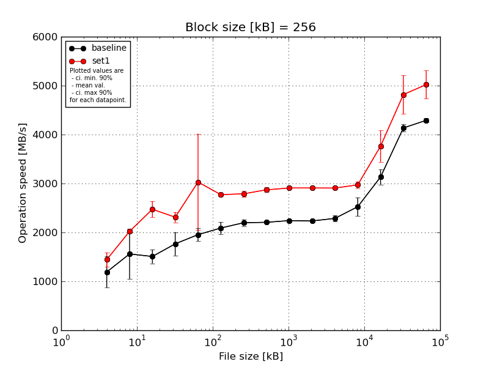
|
Block size [kB] |
File size [kB] |
| 256 |
512 |
1024 |
2048 |
4096 |
8192 |
16384 |
32768 |
65536 |
131072 |
262144 |
524288 |
1048576 |
2097152 |
4194304 |
| baseline | 256 | 1633.79 | 1984.42 | 1727.61 | 2042.61 | 2106.42 | 2211.19 | 2249.72 | 2218.37 | 2272.17 | 2277.29 | 2277.93 | 2690.08 | 3002.73 | 4048.45 | 4254.25 |
| 256 | 1365.68 | 970.99 | 1387.09 | 1512.88 | 1924.92 | 2016.15 | 2249.35 | 2212.85 | 2263.16 | 2224.74 | 2279.0 | 2323.38 | 3304.26 | 4239.39 | 4341.88 |
| 256 | 746.42 | 1922.57 | 1592.49 | 2018.04 | 2087.81 | 2247.93 | 2217.61 | 2237.94 | 2221.67 | 2213.77 | 2228.03 | 2305.28 | 3017.75 | 4181.91 | 4324.47 |
| 256 | 1082.34 | 1945.76 | 1438.96 | 1555.23 | 1819.89 | 2010.47 | 2078.46 | 2166.98 | 2237.99 | 2232.37 | 2387.28 | 2707.32 | 3028.25 | 4136.77 | 4302.15 |
| 256 | 1131.39 | 980.52 | 1396.33 | 1705.07 | 1835.02 | 1965.6 | 2197.78 | 2200.37 | 2212.63 | 2224.3 | 2265.09 | 2603.53 | 3311.05 | 4068.6 | 4233.12 |
| mean val. |
1191.92 |
1560.85 |
1508.5 |
1766.77 |
1954.81 |
2090.27 |
2198.58 |
2207.3 |
2241.52 |
2234.49 |
2287.47 |
2525.92 |
3132.81 |
4135.03 |
4291.17 |
| standard dev. |
331.51 |
534.59 |
147.67 |
251.12 |
136.13 |
129.31 |
70.68 |
26.3 |
25.73 |
24.82 |
59.5 |
197.22 |
159.89 |
79.06 |
46.19 |
| ci. min. 90% |
875.87 |
1051.19 |
1367.71 |
1527.35 |
1825.03 |
1966.99 |
2131.19 |
2182.23 |
2216.99 |
2210.83 |
2230.74 |
2337.89 |
2980.37 |
4059.65 |
4247.13 |
| ci. max 90% |
1507.98 |
2070.52 |
1649.28 |
2006.18 |
2084.59 |
2213.55 |
2265.97 |
2232.37 |
2266.06 |
2258.16 |
2344.19 |
2713.94 |
3285.25 |
4210.4 |
4335.21 |
| geom. mean |
1153.19 |
1478.62 |
1502.91 |
1752.63 |
1951.04 |
2087.11 |
2197.65 |
2207.17 |
2241.41 |
2234.39 |
2286.86 |
2519.66 |
3129.58 |
4134.42 |
4290.97 |
| median |
1131.39 |
1922.57 |
1438.96 |
1705.07 |
1924.92 |
2016.15 |
2217.61 |
2212.85 |
2237.99 |
2224.74 |
2277.93 |
2603.53 |
3028.25 |
4136.77 |
4302.15 |
| first quartile |
1082.34 |
980.52 |
1396.33 |
1555.23 |
1835.02 |
2010.47 |
2197.78 |
2200.37 |
2221.67 |
2224.3 |
2265.09 |
2323.38 |
3017.75 |
4068.6 |
4254.25 |
| third quartile |
1365.68 |
1945.76 |
1592.49 |
2018.04 |
2087.81 |
2211.19 |
2249.35 |
2218.37 |
2263.16 |
2232.37 |
2279.0 |
2690.08 |
3304.26 |
4181.91 |
4324.47 |
| minimum |
746.42 |
970.99 |
1387.09 |
1512.88 |
1819.89 |
1965.6 |
2078.46 |
2166.98 |
2212.63 |
2213.77 |
2228.03 |
2305.28 |
3002.73 |
4048.45 |
4233.12 |
| maximum |
1633.79 |
1984.42 |
1727.61 |
2042.61 |
2106.42 |
2247.93 |
2249.72 |
2237.94 |
2272.17 |
2277.29 |
2387.28 |
2707.32 |
3311.05 |
4239.39 |
4341.88 |
| set1 | 256 | 1358.6 | 1953.01 | 2651.59 | 2481.25 | 2823.11 | 2805.13 | 2856.08 | 2791.56 | 2900.25 | 2923.31 | 2909.09 | 2922.96 | 3577.8 | 4711.71 | 4802.73 |
| 256 | 1219.55 | 2032.51 | 2499.87 | 2224.62 | 2328.29 | 2719.2 | 2747.34 | 2918.42 | 2890.32 | 2903.69 | 2901.67 | 2958.7 | 3460.0 | 5484.41 | 5555.34 |
| 256 | 1507.0 | 2024.66 | 2314.99 | 2367.12 | 4801.99 | 2769.25 | 2856.08 | 2892.51 | 2912.15 | 2908.36 | 2891.52 | 3102.99 | 4164.55 | 4830.59 | 4917.64 |
| 256 | 1613.68 | 2048.39 | 2277.28 | 2259.98 | 2265.11 | 2751.99 | 2762.95 | 2853.04 | 2929.05 | 2919.24 | 2918.11 | 2943.98 | 3514.19 | 4716.38 | 4905.84 |
| 256 | 1524.52 | 2048.39 | 2625.04 | 2222.26 | 2932.15 | 2815.96 | 2725.81 | 2899.82 | 2910.82 | 2886.78 | 2914.43 | 2932.33 | 4094.11 | 4345.34 | 4925.67 |
| mean val. |
1444.67 |
2021.39 |
2473.75 |
2311.04 |
3030.13 |
2772.31 |
2789.65 |
2871.07 |
2908.52 |
2908.27 |
2906.96 |
2972.19 |
3762.13 |
4817.69 |
5021.45 |
| standard dev. |
155.65 |
39.59 |
172.49 |
111.88 |
1033.17 |
39.45 |
62.06 |
50.44 |
14.49 |
14.4 |
10.62 |
74.33 |
338.71 |
415.12 |
302.57 |
| ci. min. 90% |
1296.27 |
1983.65 |
2309.31 |
2204.38 |
2045.11 |
2734.69 |
2730.49 |
2822.98 |
2894.71 |
2894.55 |
2896.84 |
2901.33 |
3439.21 |
4421.92 |
4732.98 |
| ci. max 90% |
1593.07 |
2059.13 |
2638.2 |
2417.71 |
4015.15 |
2809.92 |
2848.82 |
2919.16 |
2922.33 |
2922.0 |
2917.09 |
3043.06 |
4085.05 |
5213.46 |
5309.91 |
| geom. mean |
1437.71 |
2021.08 |
2468.91 |
2308.92 |
2912.68 |
2772.08 |
2789.1 |
2870.71 |
2908.49 |
2908.25 |
2906.95 |
2971.46 |
3750.15 |
4803.84 |
5014.49 |
| median |
1507.0 |
2032.51 |
2499.87 |
2259.98 |
2823.11 |
2769.25 |
2762.95 |
2892.51 |
2910.82 |
2908.36 |
2909.09 |
2943.98 |
3577.8 |
4716.38 |
4917.64 |
| first quartile |
1358.6 |
2024.66 |
2314.99 |
2224.62 |
2328.29 |
2751.99 |
2747.34 |
2853.04 |
2900.25 |
2903.69 |
2901.67 |
2932.33 |
3514.19 |
4711.71 |
4905.84 |
| third quartile |
1524.52 |
2048.39 |
2625.04 |
2367.12 |
2932.15 |
2805.13 |
2856.08 |
2899.82 |
2912.15 |
2919.24 |
2914.43 |
2958.7 |
4094.11 |
4830.59 |
4925.67 |
| minimum |
1219.55 |
1953.01 |
2277.28 |
2222.26 |
2265.11 |
2719.2 |
2725.81 |
2791.56 |
2890.32 |
2886.78 |
2891.52 |
2922.96 |
3460.0 |
4345.34 |
4802.73 |
| maximum |
1613.68 |
2048.39 |
2651.59 |
2481.25 |
4801.99 |
2815.96 |
2856.08 |
2918.42 |
2929.05 |
2923.31 |
2918.11 |
3102.99 |
4164.55 |
5484.41 |
5555.34 |
| baseline set1 difference |
21.2 % |
29.51 % |
63.99 % |
30.81 % |
55.01 % |
32.63 % |
26.88 % |
30.07 % |
29.76 % |
30.15 % |
27.08 % |
17.67 % |
20.09 % |
16.51 % |
17.02 % |
| ttest p-value |
0.1614 |
0.091 |
0.0 |
0.0022 |
0.0499 |
0.0 |
0.0 |
0.0 |
0.0 |
0.0 |
0.0 |
0.0015 |
0.0056 |
0.0069 |
0.0007 |
| ttest equality |
SAME |
DIFF |
DIFF |
DIFF |
DIFF |
DIFF |
DIFF |
DIFF |
DIFF |
DIFF |
DIFF |
DIFF |
DIFF |
DIFF |
DIFF |
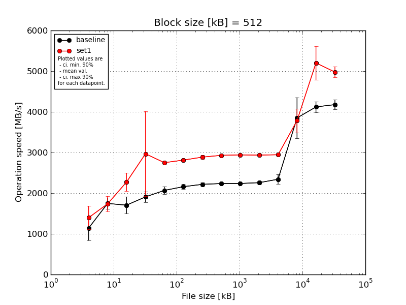
|
Block size [kB] |
File size [kB] |
| 512 |
1024 |
2048 |
4096 |
8192 |
16384 |
32768 |
65536 |
131072 |
262144 |
524288 |
1048576 |
2097152 |
4194304 |
| baseline | 512 | 1184.96 | 1590.07 | 1939.65 | 2060.88 | 2235.35 | 2236.53 | 2277.74 | 2265.32 | 2269.5 | 2249.54 | 2527.71 | 4049.61 | 4197.72 | 4034.1 |
| 512 | 881.97 | 1739.07 | 1447.36 | 1782.57 | 2048.65 | 2200.81 | 2244.53 | 2232.22 | 2221.68 | 2219.93 | 2250.01 | 4307.03 | 3919.71 | 4314.63 |
| 512 | 1665.99 | 1976.76 | 1926.73 | 2043.81 | 2063.01 | 2171.54 | 2216.83 | 2234.71 | 2206.4 | 2244.42 | 2242.52 | 3236.71 | 4156.32 | 4091.57 |
| 512 | 945.17 | 1689.34 | 1605.23 | 1801.91 | 1991.97 | 2098.34 | 2179.96 | 2259.41 | 2250.55 | 2330.6 | 2402.49 | 4323.92 | 4059.19 | 4293.37 |
| 512 | 1028.62 | 1739.07 | 1607.69 | 1852.85 | 2001.96 | 2090.11 | 2165.23 | 2193.96 | 2241.64 | 2246.66 | 2288.4 | 3330.89 | 4272.93 | 4154.45 |
| mean val. |
1141.34 |
1746.86 |
1705.33 |
1908.4 |
2068.19 |
2159.47 |
2216.86 |
2237.13 |
2237.95 |
2258.23 |
2342.23 |
3849.63 |
4121.17 |
4177.62 |
| standard dev. |
314.49 |
142.19 |
217.96 |
134.02 |
98.17 |
63.91 |
46.1 |
28.21 |
24.64 |
42.14 |
121.84 |
528.89 |
136.52 |
123.19 |
| ci. min. 90% |
841.51 |
1611.3 |
1497.53 |
1780.63 |
1974.6 |
2098.53 |
2172.91 |
2210.23 |
2214.46 |
2218.05 |
2226.07 |
3345.39 |
3991.01 |
4060.17 |
| ci. max 90% |
1441.17 |
1882.42 |
1913.13 |
2036.18 |
2161.78 |
2220.4 |
2260.8 |
2264.02 |
2261.45 |
2298.41 |
2458.38 |
4353.88 |
4251.34 |
4295.07 |
| geom. mean |
1111.01 |
1742.39 |
1694.23 |
1904.68 |
2066.38 |
2158.71 |
2216.48 |
2236.98 |
2237.85 |
2257.92 |
2339.75 |
3819.68 |
4119.35 |
4176.17 |
| median |
1028.62 |
1739.07 |
1607.69 |
1852.85 |
2048.65 |
2171.54 |
2216.83 |
2234.71 |
2241.64 |
2246.66 |
2288.4 |
4049.61 |
4156.32 |
4154.45 |
| first quartile |
945.17 |
1689.34 |
1605.23 |
1801.91 |
2001.96 |
2098.34 |
2179.96 |
2232.22 |
2221.68 |
2244.42 |
2250.01 |
3330.89 |
4059.19 |
4091.57 |
| third quartile |
1184.96 |
1739.07 |
1926.73 |
2043.81 |
2063.01 |
2200.81 |
2244.53 |
2259.41 |
2250.55 |
2249.54 |
2402.49 |
4307.03 |
4197.72 |
4293.37 |
| minimum |
881.97 |
1590.07 |
1447.36 |
1782.57 |
1991.97 |
2090.11 |
2165.23 |
2193.96 |
2206.4 |
2219.93 |
2242.52 |
3236.71 |
3919.71 |
4034.1 |
| maximum |
1665.99 |
1976.76 |
1939.65 |
2060.88 |
2235.35 |
2236.53 |
2277.74 |
2265.32 |
2269.5 |
2330.6 |
2527.71 |
4323.92 |
4272.93 |
4314.63 |
| set1 | 512 | 1667.31 | 1706.52 | 2695.74 | 2538.23 | 2764.46 | 2827.92 | 2933.35 | 2934.69 | 2951.68 | 2953.29 | 2949.34 | 3623.55 | 4734.03 | 4916.45 |
| 512 | 1070.63 | 2078.65 | 2152.69 | 2460.07 | 2705.39 | 2832.34 | 2819.36 | 2934.69 | 2941.58 | 2928.79 | 2943.24 | 4103.12 | 5506.87 | 5126.62 |
| 512 | 1070.63 | 1599.78 | 2168.83 | 4926.06 | 2743.44 | 2797.62 | 2907.74 | 2925.57 | 2932.28 | 2920.67 | 2943.34 | 3792.68 | 4716.72 | 4816.6 |
| 512 | 1587.78 | 1692.07 | 2178.4 | 2450.73 | 2747.25 | 2770.48 | 2851.04 | 2925.7 | 2936.39 | 2935.65 | 2946.03 | 3356.33 | 5534.19 | 4905.31 |
| 512 | 1592.61 | 1607.75 | 2168.83 | 2464.41 | 2790.43 | 2838.33 | 2920.46 | 2931.61 | 2940.7 | 2940.03 | 2946.19 | 4032.85 | 5522.43 | 5128.35 |
| mean val. |
1397.79 |
1736.95 |
2272.9 |
2967.9 |
2750.19 |
2813.34 |
2886.39 |
2930.45 |
2940.53 |
2935.69 |
2945.63 |
3781.71 |
5202.85 |
4978.67 |
| standard dev. |
300.32 |
196.98 |
236.56 |
1095.2 |
31.16 |
28.64 |
48.9 |
4.57 |
7.26 |
12.26 |
2.51 |
305.15 |
436.02 |
141.26 |
| ci. min. 90% |
1111.47 |
1549.15 |
2047.37 |
1923.74 |
2720.48 |
2786.03 |
2839.77 |
2926.09 |
2933.61 |
2923.99 |
2943.23 |
3490.78 |
4787.15 |
4843.99 |
| ci. max 90% |
1684.11 |
1924.75 |
2498.43 |
4012.06 |
2779.9 |
2840.65 |
2933.01 |
2934.81 |
2947.44 |
2947.38 |
2948.02 |
4072.63 |
5618.55 |
5113.34 |
| geom. mean |
1370.37 |
1728.69 |
2263.86 |
2843.13 |
2750.05 |
2813.22 |
2886.05 |
2930.45 |
2940.52 |
2935.67 |
2945.63 |
3771.67 |
5187.91 |
4977.07 |
| median |
1587.78 |
1692.07 |
2168.83 |
2464.41 |
2747.25 |
2827.92 |
2907.74 |
2931.61 |
2940.7 |
2935.65 |
2946.03 |
3792.68 |
5506.87 |
4916.45 |
| first quartile |
1070.63 |
1607.75 |
2168.83 |
2460.07 |
2743.44 |
2797.62 |
2851.04 |
2925.7 |
2936.39 |
2928.79 |
2943.34 |
3623.55 |
4734.03 |
4905.31 |
| third quartile |
1592.61 |
1706.52 |
2178.4 |
2538.23 |
2764.46 |
2832.34 |
2920.46 |
2934.69 |
2941.58 |
2940.03 |
2946.19 |
4032.85 |
5522.43 |
5126.62 |
| minimum |
1070.63 |
1599.78 |
2152.69 |
2450.73 |
2705.39 |
2770.48 |
2819.36 |
2925.57 |
2932.28 |
2920.67 |
2943.24 |
3356.33 |
4716.72 |
4816.6 |
| maximum |
1667.31 |
2078.65 |
2695.74 |
4926.06 |
2790.43 |
2838.33 |
2933.35 |
2934.69 |
2951.68 |
2953.29 |
2949.34 |
4103.12 |
5534.19 |
5128.35 |
| baseline set1 difference |
22.47 % |
-0.57 % |
33.28 % |
55.52 % |
32.98 % |
30.28 % |
30.2 % |
30.99 % |
31.39 % |
30.0 % |
25.76 % |
-1.76 % |
26.25 % |
19.17 % |
| ttest p-value |
0.2238 |
0.9296 |
0.0043 |
0.0641 |
0.0 |
0.0 |
0.0 |
0.0 |
0.0 |
0.0 |
0.0 |
0.8098 |
0.0007 |
0.0 |
| ttest equality |
SAME |
SAME |
DIFF |
DIFF |
DIFF |
DIFF |
DIFF |
DIFF |
DIFF |
DIFF |
DIFF |
SAME |
DIFF |
DIFF |
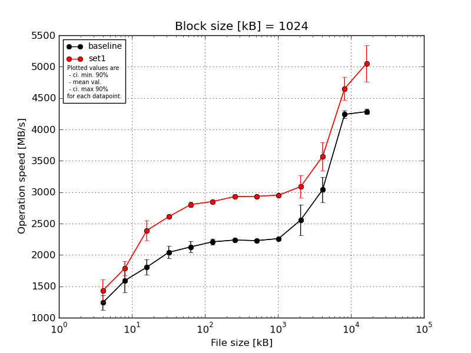
|
Block size [kB] |
File size [kB] |
| 1024 |
2048 |
4096 |
8192 |
16384 |
32768 |
65536 |
131072 |
262144 |
524288 |
1048576 |
2097152 |
4194304 |
| baseline | 1024 | 1408.52 | 1779.21 | 1968.51 | 2205.67 | 2209.36 | 2264.67 | 2250.03 | 2260.52 | 2287.94 | 2597.68 | 3302.75 | 4198.63 | 4272.58 |
| 1024 | 1190.61 | 1499.09 | 1689.24 | 1938.46 | 2147.63 | 2254.14 | 2268.63 | 2238.0 | 2264.99 | 2450.79 | 2866.69 | 4237.53 | 4305.9 |
| 1024 | 1329.92 | 1721.16 | 1905.68 | 2075.13 | 2163.91 | 2175.69 | 2225.15 | 2199.31 | 2259.27 | 2794.15 | 3200.28 | 4299.6 | 4217.17 |
| 1024 | 1108.49 | 1296.18 | 1797.85 | 1993.63 | 2149.35 | 2143.79 | 2216.44 | 2218.03 | 2234.79 | 2170.69 | 3017.51 | 4155.31 | 4334.63 |
| 1024 | 1165.47 | 1658.55 | 1668.08 | 1994.94 | 1972.12 | 2210.7 | 2226.94 | 2228.76 | 2255.31 | 2766.3 | 2808.48 | 4310.94 | 4286.31 |
| mean val. |
1240.6 |
1590.84 |
1805.87 |
2041.57 |
2128.47 |
2209.8 |
2237.44 |
2228.92 |
2260.46 |
2555.92 |
3039.14 |
4240.4 |
4283.32 |
| standard dev. |
124.27 |
195.12 |
131.4 |
103.87 |
90.9 |
51.23 |
21.41 |
22.78 |
19.12 |
256.03 |
211.46 |
66.09 |
43.71 |
| ci. min. 90% |
1122.12 |
1404.81 |
1680.59 |
1942.53 |
2041.82 |
2160.95 |
2217.03 |
2207.2 |
2242.23 |
2311.82 |
2837.54 |
4177.39 |
4241.64 |
| ci. max 90% |
1359.08 |
1776.87 |
1931.15 |
2140.6 |
2215.13 |
2258.64 |
2257.85 |
2250.65 |
2278.69 |
2800.02 |
3240.75 |
4303.42 |
4324.99 |
| geom. mean |
1235.71 |
1580.71 |
1802.06 |
2039.5 |
2126.87 |
2209.32 |
2237.36 |
2228.83 |
2260.4 |
2545.23 |
3033.28 |
4239.99 |
4283.14 |
| median |
1190.61 |
1658.55 |
1797.85 |
1994.94 |
2149.35 |
2210.7 |
2226.94 |
2228.76 |
2259.27 |
2597.68 |
3017.51 |
4237.53 |
4286.31 |
| first quartile |
1165.47 |
1499.09 |
1689.24 |
1993.63 |
2147.63 |
2175.69 |
2225.15 |
2218.03 |
2255.31 |
2450.79 |
2866.69 |
4198.63 |
4272.58 |
| third quartile |
1329.92 |
1721.16 |
1905.68 |
2075.13 |
2163.91 |
2254.14 |
2250.03 |
2238.0 |
2264.99 |
2766.3 |
3200.28 |
4299.6 |
4305.9 |
| minimum |
1108.49 |
1296.18 |
1668.08 |
1938.46 |
1972.12 |
2143.79 |
2216.44 |
2199.31 |
2234.79 |
2170.69 |
2808.48 |
4155.31 |
4217.17 |
| maximum |
1408.52 |
1779.21 |
1968.51 |
2205.67 |
2209.36 |
2264.67 |
2268.63 |
2260.52 |
2287.94 |
2794.15 |
3302.75 |
4310.94 |
4334.63 |
| set1 | 1024 | 1700.99 | 1938.3 | 2293.6 | 2637.76 | 2865.84 | 2862.53 | 2950.4 | 2932.55 | 2956.53 | 2960.26 | 3383.8 | 4736.29 | 4861.99 |
| 1024 | 1319.46 | 1673.44 | 2300.2 | 2597.33 | 2777.25 | 2810.44 | 2944.41 | 2918.51 | 2949.96 | 3265.16 | 3575.41 | 4752.09 | 5583.14 |
| 1024 | 1557.6 | 1836.87 | 2650.51 | 2623.12 | 2840.97 | 2846.5 | 2918.89 | 2926.05 | 2950.67 | 2944.93 | 3458.36 | 4429.68 | 5009.81 |
| 1024 | 1302.25 | 1828.06 | 2239.71 | 2587.32 | 2762.5 | 2848.25 | 2921.82 | 2953.06 | 2943.17 | 2958.51 | 3451.23 | 4866.36 | 4841.06 |
| 1024 | 1287.07 | 1652.99 | 2466.22 | 2603.38 | 2774.38 | 2888.34 | 2915.47 | 2941.1 | 2965.75 | 3313.96 | 3977.57 | 4465.22 | 4962.33 |
| mean val. |
1433.47 |
1785.93 |
2390.05 |
2609.78 |
2804.19 |
2851.21 |
2930.2 |
2934.25 |
2953.21 |
3088.56 |
3569.27 |
4649.93 |
5051.67 |
| standard dev. |
186.16 |
120.33 |
168.54 |
20.38 |
46.12 |
28.28 |
16.01 |
13.4 |
8.46 |
184.39 |
238.42 |
191.94 |
305.18 |
| ci. min. 90% |
1255.99 |
1671.21 |
2229.36 |
2590.35 |
2760.22 |
2824.25 |
2914.93 |
2921.48 |
2945.15 |
2912.77 |
3341.96 |
4466.93 |
4760.71 |
| ci. max 90% |
1610.96 |
1900.65 |
2550.73 |
2629.21 |
2848.15 |
2878.18 |
2945.46 |
2947.03 |
2961.27 |
3264.36 |
3796.58 |
4832.92 |
5342.62 |
| geom. mean |
1424.2 |
1782.68 |
2385.43 |
2609.72 |
2803.88 |
2851.1 |
2930.16 |
2934.23 |
2953.2 |
3084.22 |
3563.18 |
4646.74 |
5044.61 |
| median |
1319.46 |
1828.06 |
2300.2 |
2603.38 |
2777.25 |
2848.25 |
2921.82 |
2932.55 |
2950.67 |
2960.26 |
3458.36 |
4736.29 |
4962.33 |
| first quartile |
1302.25 |
1673.44 |
2293.6 |
2597.33 |
2774.38 |
2846.5 |
2918.89 |
2926.05 |
2949.96 |
2958.51 |
3451.23 |
4465.22 |
4861.99 |
| third quartile |
1557.6 |
1836.87 |
2466.22 |
2623.12 |
2840.97 |
2862.53 |
2944.41 |
2941.1 |
2956.53 |
3265.16 |
3575.41 |
4752.09 |
5009.81 |
| minimum |
1287.07 |
1652.99 |
2239.71 |
2587.32 |
2762.5 |
2810.44 |
2915.47 |
2918.51 |
2943.17 |
2944.93 |
3383.8 |
4429.68 |
4841.06 |
| maximum |
1700.99 |
1938.3 |
2650.51 |
2637.76 |
2865.84 |
2888.34 |
2950.4 |
2953.06 |
2965.75 |
3313.96 |
3977.57 |
4866.36 |
5583.14 |
| baseline set1 difference |
15.55 % |
12.26 % |
32.35 % |
27.83 % |
31.75 % |
29.03 % |
30.96 % |
31.64 % |
30.65 % |
20.84 % |
17.44 % |
9.66 % |
17.94 % |
| ttest p-value |
0.0902 |
0.0935 |
0.0003 |
0.0 |
0.0 |
0.0 |
0.0 |
0.0 |
0.0 |
0.0054 |
0.0059 |
0.002 |
0.0005 |
| ttest equality |
DIFF |
DIFF |
DIFF |
DIFF |
DIFF |
DIFF |
DIFF |
DIFF |
DIFF |
DIFF |
DIFF |
DIFF |
DIFF |
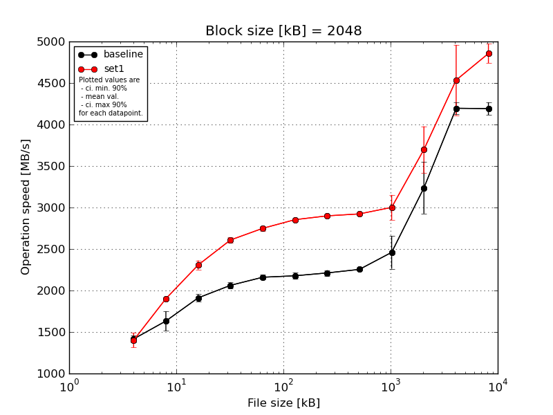
|
Block size [kB] |
File size [kB] |
| 2048 |
4096 |
8192 |
16384 |
32768 |
65536 |
131072 |
262144 |
524288 |
1048576 |
2097152 |
4194304 |
| baseline | 2048 | 1383.16 | 1746.75 | 1970.45 | 2090.63 | 2205.83 | 2237.93 | 2246.52 | 2257.97 | 2431.18 | 3447.04 | 4148.75 | 4233.82 |
| 2048 | 1379.29 | 1543.75 | 1921.15 | 2100.58 | 2170.66 | 2189.38 | 2207.05 | 2257.69 | 2789.58 | 2910.01 | 4271.37 | 4246.61 |
| 2048 | 1452.37 | 1719.72 | 1931.88 | 2069.29 | 2151.1 | 2165.17 | 2156.22 | 2243.45 | 2355.37 | 2941.95 | 4187.38 | 4056.1 |
| 2048 | 1393.73 | 1689.24 | 1877.09 | 2034.35 | 2144.61 | 2164.58 | 2215.3 | 2247.29 | 2486.35 | 3217.71 | 4105.75 | 4188.6 |
| 2048 | 1472.77 | 1462.47 | 1855.29 | 2014.63 | 2125.99 | 2129.56 | 2233.47 | 2264.79 | 2235.89 | 3667.97 | 4265.73 | 4234.73 |
| mean val. |
1416.27 |
1632.39 |
1911.17 |
2061.9 |
2159.64 |
2177.33 |
2211.71 |
2254.24 |
2459.67 |
3236.93 |
4195.79 |
4191.97 |
| standard dev. |
43.2 |
123.15 |
45.63 |
36.64 |
30.36 |
40.03 |
34.64 |
8.69 |
206.96 |
325.66 |
72.45 |
79.12 |
| ci. min. 90% |
1375.07 |
1514.98 |
1867.67 |
2026.97 |
2130.7 |
2139.16 |
2178.69 |
2245.95 |
2262.36 |
2926.46 |
4126.72 |
4116.54 |
| ci. max 90% |
1457.46 |
1749.8 |
1954.67 |
2096.83 |
2188.58 |
2215.49 |
2244.74 |
2262.52 |
2656.98 |
3547.41 |
4264.86 |
4267.4 |
| geom. mean |
1415.74 |
1628.58 |
1910.74 |
2061.64 |
2159.47 |
2177.03 |
2211.49 |
2254.22 |
2452.93 |
3223.96 |
4195.29 |
4191.37 |
| median |
1393.73 |
1689.24 |
1921.15 |
2069.29 |
2151.1 |
2165.17 |
2215.3 |
2257.69 |
2431.18 |
3217.71 |
4187.38 |
4233.82 |
| first quartile |
1383.16 |
1543.75 |
1877.09 |
2034.35 |
2144.61 |
2164.58 |
2207.05 |
2247.29 |
2355.37 |
2941.95 |
4148.75 |
4188.6 |
| third quartile |
1452.37 |
1719.72 |
1931.88 |
2090.63 |
2170.66 |
2189.38 |
2233.47 |
2257.97 |
2486.35 |
3447.04 |
4265.73 |
4234.73 |
| minimum |
1379.29 |
1462.47 |
1855.29 |
2014.63 |
2125.99 |
2129.56 |
2156.22 |
2243.45 |
2235.89 |
2910.01 |
4105.75 |
4056.1 |
| maximum |
1472.77 |
1746.75 |
1970.45 |
2100.58 |
2205.83 |
2237.93 |
2246.52 |
2264.79 |
2789.58 |
3667.97 |
4271.37 |
4246.61 |
| set1 | 2048 | 1525.53 | 1933.35 | 2387.4 | 2626.79 | 2794.99 | 2875.37 | 2886.53 | 2929.46 | 2945.92 | 3809.11 | 4360.92 | 4824.49 |
| 2048 | 1342.22 | 1905.68 | 2256.7 | 2609.74 | 2717.13 | 2857.01 | 2900.78 | 2915.16 | 3282.24 | 3604.34 | 4347.11 | 5061.96 |
| 2048 | 1323.58 | 1892.99 | 2268.29 | 2619.52 | 2743.01 | 2844.57 | 2903.22 | 2933.39 | 2929.21 | 4147.9 | 4364.39 | 4850.33 |
| 2048 | 1340.5 | 1891.28 | 2274.14 | 2554.31 | 2756.02 | 2840.53 | 2901.58 | 2921.21 | 2926.82 | 3544.3 | 5327.57 | 4746.25 |
| 2048 | 1472.77 | 1884.27 | 2348.14 | 2629.78 | 2732.23 | 2849.0 | 2904.54 | 2915.55 | 2922.34 | 3389.17 | 4276.69 | 4794.01 |
| mean val. |
1400.92 |
1901.51 |
2306.93 |
2608.03 |
2748.68 |
2853.3 |
2899.33 |
2922.95 |
3001.3 |
3698.96 |
4535.34 |
4855.41 |
| standard dev. |
91.88 |
19.4 |
57.59 |
31.01 |
29.57 |
13.77 |
7.3 |
8.22 |
157.3 |
292.63 |
444.3 |
121.79 |
| ci. min. 90% |
1313.32 |
1883.02 |
2252.03 |
2578.46 |
2720.49 |
2840.17 |
2892.37 |
2915.12 |
2851.34 |
3419.97 |
4111.74 |
4739.29 |
| ci. max 90% |
1488.52 |
1920.01 |
2361.83 |
2637.59 |
2776.86 |
2866.43 |
2906.29 |
2930.79 |
3151.27 |
3977.95 |
4958.93 |
4971.52 |
| geom. mean |
1398.56 |
1901.44 |
2306.36 |
2607.88 |
2748.55 |
2853.27 |
2899.32 |
2922.95 |
2998.15 |
3689.95 |
4519.27 |
4854.21 |
| median |
1342.22 |
1892.99 |
2274.14 |
2619.52 |
2743.01 |
2849.0 |
2901.58 |
2921.21 |
2929.21 |
3604.34 |
4360.92 |
4824.49 |
| first quartile |
1340.5 |
1891.28 |
2268.29 |
2609.74 |
2732.23 |
2844.57 |
2900.78 |
2915.55 |
2926.82 |
3544.3 |
4347.11 |
4794.01 |
| third quartile |
1472.77 |
1905.68 |
2348.14 |
2626.79 |
2756.02 |
2857.01 |
2903.22 |
2929.46 |
2945.92 |
3809.11 |
4364.39 |
4850.33 |
| minimum |
1323.58 |
1884.27 |
2256.7 |
2554.31 |
2717.13 |
2840.53 |
2886.53 |
2915.16 |
2922.34 |
3389.17 |
4276.69 |
4746.25 |
| maximum |
1525.53 |
1933.35 |
2387.4 |
2629.78 |
2794.99 |
2875.37 |
2904.54 |
2933.39 |
3282.24 |
4147.9 |
5327.57 |
5061.96 |
| baseline set1 difference |
-1.08 % |
16.49 % |
20.71 % |
26.49 % |
27.27 % |
31.05 % |
31.09 % |
29.66 % |
22.02 % |
14.27 % |
8.09 % |
15.83 % |
| ttest p-value |
0.7441 |
0.0013 |
0.0 |
0.0 |
0.0 |
0.0 |
0.0 |
0.0 |
0.0016 |
0.046 |
0.1302 |
0.0 |
| ttest equality |
SAME |
DIFF |
DIFF |
DIFF |
DIFF |
DIFF |
DIFF |
DIFF |
DIFF |
DIFF |
SAME |
DIFF |
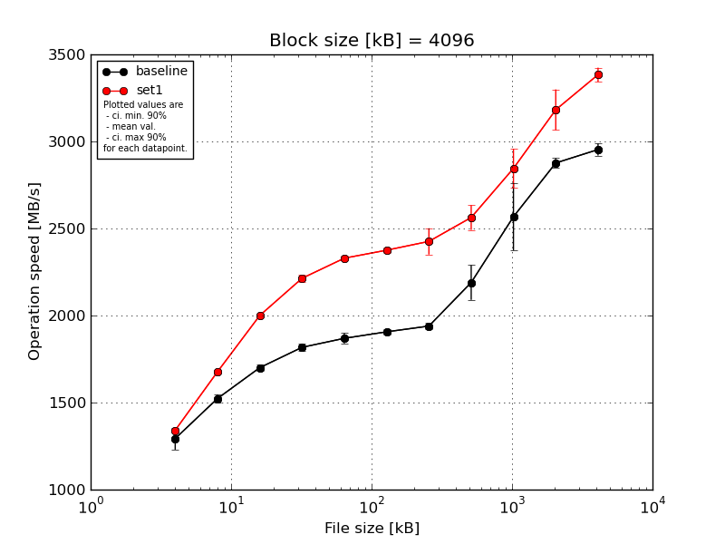
|
Block size [kB] |
File size [kB] |
| 4096 |
8192 |
16384 |
32768 |
65536 |
131072 |
262144 |
524288 |
1048576 |
2097152 |
4194304 |
| baseline | 4096 | 1344.13 | 1562.5 | 1707.96 | 1851.08 | 1908.4 | 1929.22 | 1951.04 | 2039.21 | 2334.15 | 2903.81 | 2979.32 |
| 4096 | 1311.46 | 1505.98 | 1716.35 | 1820.05 | 1877.71 | 1903.97 | 1914.26 | 2242.2 | 2892.19 | 2910.68 | 2893.14 |
| 4096 | 1177.53 | 1501.2 | 1672.59 | 1790.6 | 1843.96 | 1909.88 | 1965.45 | 2321.98 | 2498.25 | 2850.45 | 2947.03 |
| 4096 | 1302.5 | 1519.41 | 1709.92 | 1820.87 | 1883.57 | 1883.1 | 1937.62 | 2186.8 | 2549.22 | 2864.05 | 2975.45 |
| 4096 | 1329.75 | 1527.02 | 1695.28 | 1804.03 | 1831.76 | 1905.67 | 1928.95 | 2158.13 | 2565.11 | 2852.55 | 2972.19 |
| mean val. |
1293.07 |
1523.22 |
1700.42 |
1817.33 |
1869.08 |
1906.37 |
1939.46 |
2189.66 |
2567.78 |
2876.31 |
2953.43 |
| standard dev. |
66.58 |
24.26 |
17.33 |
22.64 |
31.04 |
16.45 |
19.74 |
104.77 |
203.11 |
28.81 |
36.0 |
| ci. min. 90% |
1229.6 |
1500.09 |
1683.89 |
1795.74 |
1839.49 |
1890.69 |
1920.64 |
2089.78 |
2374.14 |
2848.84 |
2919.1 |
| ci. max 90% |
1356.55 |
1546.35 |
1716.94 |
1838.91 |
1898.68 |
1922.05 |
1958.28 |
2289.55 |
2761.42 |
2903.78 |
2987.75 |
| geom. mean |
1291.64 |
1523.07 |
1700.35 |
1817.21 |
1868.88 |
1906.31 |
1939.38 |
2187.64 |
2561.54 |
2876.19 |
2953.25 |
| median |
1311.46 |
1519.41 |
1707.96 |
1820.05 |
1877.71 |
1905.67 |
1937.62 |
2186.8 |
2549.22 |
2864.05 |
2972.19 |
| first quartile |
1302.5 |
1505.98 |
1695.28 |
1804.03 |
1843.96 |
1903.97 |
1928.95 |
2158.13 |
2498.25 |
2852.55 |
2947.03 |
| third quartile |
1329.75 |
1527.02 |
1709.92 |
1820.87 |
1883.57 |
1909.88 |
1951.04 |
2242.2 |
2565.11 |
2903.81 |
2975.45 |
| minimum |
1177.53 |
1501.2 |
1672.59 |
1790.6 |
1831.76 |
1883.1 |
1914.26 |
2039.21 |
2334.15 |
2850.45 |
2893.14 |
| maximum |
1344.13 |
1562.5 |
1716.35 |
1851.08 |
1908.4 |
1929.22 |
1965.45 |
2321.98 |
2892.19 |
2910.68 |
2979.32 |
| set1 | 4096 | 1349.97 | 1682.79 | 1989.31 | 2246.55 | 2319.6 | 2395.92 | 2566.67 | 2652.49 | 2980.46 | 3175.92 | 3372.2 |
| 4096 | 1342.73 | 1680.34 | 1997.0 | 2200.19 | 2351.46 | 2367.48 | 2388.24 | 2560.13 | 2929.27 | 3221.85 | 3437.34 |
| 4096 | 1334.62 | 1672.97 | 2009.8 | 2202.36 | 2336.09 | 2380.51 | 2397.41 | 2623.42 | 2709.36 | 3366.24 | 3326.88 |
| 4096 | 1337.81 | 1679.58 | 1990.54 | 2200.51 | 2324.22 | 2379.84 | 2398.73 | 2484.05 | 2743.87 | 3092.54 | 3410.58 |
| 4096 | 1339.09 | 1668.81 | 2014.08 | 2219.58 | 2315.56 | 2352.55 | 2378.03 | 2495.12 | 2864.43 | 3053.57 | 3371.06 |
| mean val. |
1340.85 |
1676.9 |
2000.15 |
2213.84 |
2329.39 |
2375.26 |
2425.82 |
2563.04 |
2845.48 |
3182.02 |
3383.61 |
| standard dev. |
5.87 |
5.8 |
11.26 |
19.99 |
14.54 |
16.21 |
79.18 |
75.01 |
116.67 |
122.54 |
42.19 |
| ci. min. 90% |
1335.25 |
1671.37 |
1989.41 |
2194.78 |
2315.52 |
2359.8 |
2350.33 |
2491.53 |
2734.24 |
3065.19 |
3343.39 |
| ci. max 90% |
1346.44 |
1682.43 |
2010.88 |
2232.9 |
2343.25 |
2390.72 |
2501.3 |
2634.56 |
2956.72 |
3298.85 |
3423.84 |
| geom. mean |
1340.83 |
1676.89 |
2000.12 |
2213.77 |
2329.35 |
2375.22 |
2424.81 |
2562.17 |
2843.56 |
3180.16 |
3383.4 |
| median |
1339.09 |
1679.58 |
1997.0 |
2202.36 |
2324.22 |
2379.84 |
2397.41 |
2560.13 |
2864.43 |
3175.92 |
3372.2 |
| first quartile |
1337.81 |
1672.97 |
1990.54 |
2200.51 |
2319.6 |
2367.48 |
2388.24 |
2495.12 |
2743.87 |
3092.54 |
3371.06 |
| third quartile |
1342.73 |
1680.34 |
2009.8 |
2219.58 |
2336.09 |
2380.51 |
2398.73 |
2623.42 |
2929.27 |
3221.85 |
3410.58 |
| minimum |
1334.62 |
1668.81 |
1989.31 |
2200.19 |
2315.56 |
2352.55 |
2378.03 |
2484.05 |
2709.36 |
3053.57 |
3326.88 |
| maximum |
1349.97 |
1682.79 |
2014.08 |
2246.55 |
2351.46 |
2395.92 |
2566.67 |
2652.49 |
2980.46 |
3366.24 |
3437.34 |
| baseline set1 difference |
3.69 % |
10.09 % |
17.63 % |
21.82 % |
24.63 % |
24.6 % |
25.08 % |
17.05 % |
10.81 % |
10.63 % |
14.57 % |
| ttest p-value |
0.1486 |
0.0 |
0.0 |
0.0 |
0.0 |
0.0 |
0.0 |
0.0002 |
0.0292 |
0.0006 |
0.0 |
| ttest equality |
SAME |
DIFF |
DIFF |
DIFF |
DIFF |
DIFF |
DIFF |
DIFF |
DIFF |
DIFF |
DIFF |
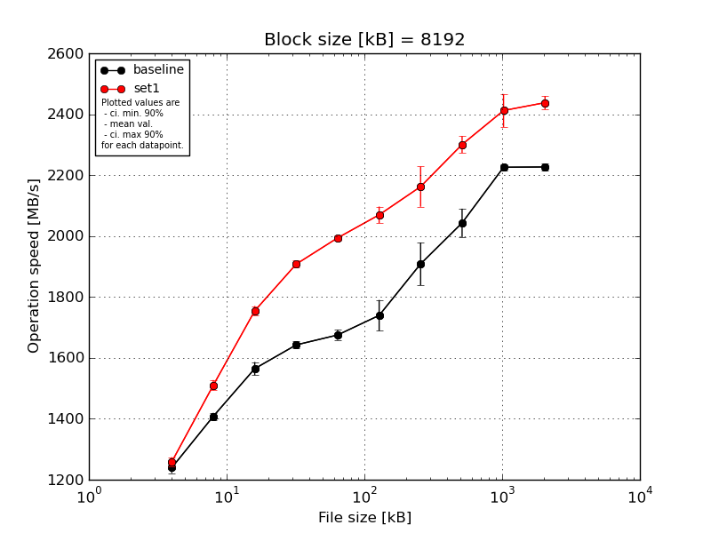
|
Block size [kB] |
File size [kB] |
| 8192 |
16384 |
32768 |
65536 |
131072 |
262144 |
524288 |
1048576 |
2097152 |
4194304 |
| baseline | 8192 | 1254.33 | 1397.5 | 1594.19 | 1659.92 | 1703.82 | 1794.65 | 1951.14 | 1984.32 | 2234.77 | 2234.02 |
| 8192 | 1254.15 | 1413.45 | 1574.74 | 1643.13 | 1674.19 | 1676.06 | 1787.4 | 2067.79 | 2210.44 | 2222.85 |
| 8192 | 1232.68 | 1426.4 | 1543.57 | 1627.75 | 1672.74 | 1787.43 | 1890.34 | 2003.63 | 2218.61 | 2210.9 |
| 8192 | 1246.09 | 1403.13 | 1570.79 | 1640.6 | 1668.58 | 1743.32 | 1964.0 | 2055.1 | 2235.07 | 2240.65 |
| 8192 | 1210.09 | 1399.94 | 1539.87 | 1641.66 | 1656.85 | 1696.09 | 1950.22 | 2104.9 | 2230.51 | 2225.6 |
| mean val. |
1239.47 |
1408.08 |
1564.63 |
1642.61 |
1675.23 |
1739.51 |
1908.62 |
2043.15 |
2225.88 |
2226.81 |
| standard dev. |
18.64 |
11.91 |
22.75 |
11.46 |
17.37 |
53.06 |
73.54 |
48.95 |
10.91 |
11.33 |
| ci. min. 90% |
1221.7 |
1396.73 |
1542.94 |
1631.68 |
1658.67 |
1688.92 |
1838.5 |
1996.48 |
2215.48 |
2216.0 |
| ci. max 90% |
1257.23 |
1419.43 |
1586.32 |
1653.54 |
1691.8 |
1790.1 |
1978.74 |
2089.82 |
2236.28 |
2237.61 |
| geom. mean |
1239.35 |
1408.04 |
1564.5 |
1642.58 |
1675.16 |
1738.86 |
1907.46 |
2042.68 |
2225.86 |
2226.78 |
| median |
1246.09 |
1403.13 |
1570.79 |
1641.66 |
1672.74 |
1743.32 |
1950.22 |
2055.1 |
2230.51 |
2225.6 |
| first quartile |
1232.68 |
1399.94 |
1543.57 |
1640.6 |
1668.58 |
1696.09 |
1890.34 |
2003.63 |
2218.61 |
2222.85 |
| third quartile |
1254.15 |
1413.45 |
1574.74 |
1643.13 |
1674.19 |
1787.43 |
1951.14 |
2067.79 |
2234.77 |
2234.02 |
| minimum |
1210.09 |
1397.5 |
1539.87 |
1627.75 |
1656.85 |
1676.06 |
1787.4 |
1984.32 |
2210.44 |
2210.9 |
| maximum |
1254.33 |
1426.4 |
1594.19 |
1659.92 |
1703.82 |
1794.65 |
1964.0 |
2104.9 |
2235.07 |
2240.65 |
| set1 | 8192 | 1234.35 | 1504.76 | 1729.81 | 1891.14 | 1984.77 | 2043.41 | 2243.65 | 2318.61 | 2350.71 | 2414.85 |
| 8192 | 1265.4 | 1499.11 | 1755.42 | 1907.37 | 1988.91 | 2042.64 | 2070.62 | 2298.7 | 2377.31 | 2424.23 |
| 8192 | 1265.64 | 1541.57 | 1775.32 | 1925.28 | 1989.62 | 2063.78 | 2121.07 | 2339.69 | 2496.97 | 2452.93 |
| 8192 | 1253.72 | 1500.95 | 1759.8 | 1913.48 | 2002.28 | 2095.03 | 2163.71 | 2269.1 | 2400.26 | 2469.77 |
| 8192 | 1275.5 | 1504.49 | 1752.47 | 1901.82 | 2004.82 | 2103.48 | 2212.01 | 2277.16 | 2435.42 | 2428.12 |
| mean val. |
1258.92 |
1510.18 |
1754.57 |
1907.82 |
1994.08 |
2069.67 |
2162.21 |
2300.65 |
2412.13 |
2437.98 |
| standard dev. |
15.75 |
17.71 |
16.4 |
12.76 |
8.89 |
28.47 |
69.28 |
29.15 |
56.72 |
22.67 |
| ci. min. 90% |
1243.91 |
1493.29 |
1738.93 |
1895.65 |
1985.61 |
2042.53 |
2096.16 |
2272.86 |
2358.06 |
2416.37 |
| ci. max 90% |
1273.94 |
1527.06 |
1770.2 |
1919.98 |
2002.55 |
2096.81 |
2228.26 |
2328.44 |
2466.21 |
2459.59 |
| geom. mean |
1258.85 |
1510.09 |
1754.5 |
1907.78 |
1994.06 |
2069.51 |
2161.32 |
2300.5 |
2411.6 |
2437.9 |
| median |
1265.4 |
1504.49 |
1755.42 |
1907.37 |
1989.62 |
2063.78 |
2163.71 |
2298.7 |
2400.26 |
2428.12 |
| first quartile |
1253.72 |
1500.95 |
1752.47 |
1901.82 |
1988.91 |
2043.41 |
2121.07 |
2277.16 |
2377.31 |
2424.23 |
| third quartile |
1265.64 |
1504.76 |
1759.8 |
1913.48 |
2002.28 |
2095.03 |
2212.01 |
2318.61 |
2435.42 |
2452.93 |
| minimum |
1234.35 |
1499.11 |
1729.81 |
1891.14 |
1984.77 |
2042.64 |
2070.62 |
2269.1 |
2350.71 |
2414.85 |
| maximum |
1275.5 |
1541.57 |
1775.32 |
1925.28 |
2004.82 |
2103.48 |
2243.65 |
2339.69 |
2496.97 |
2469.77 |
| baseline set1 difference |
1.57 % |
7.25 % |
12.14 % |
16.15 % |
19.03 % |
18.98 % |
13.29 % |
12.6 % |
8.37 % |
9.48 % |
| ttest p-value |
0.1124 |
0.0 |
0.0 |
0.0 |
0.0 |
0.0 |
0.0005 |
0.0 |
0.0001 |
0.0 |
| ttest equality |
SAME |
DIFF |
DIFF |
DIFF |
DIFF |
DIFF |
DIFF |
DIFF |
DIFF |
DIFF |
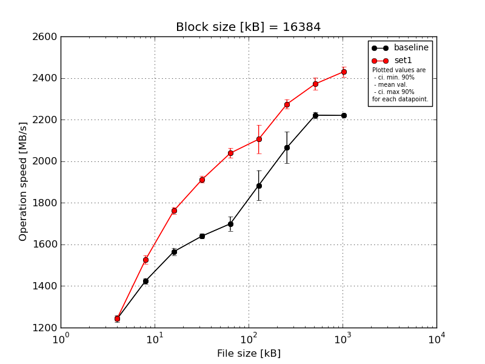
|
Block size [kB] |
File size [kB] |
| 16384 |
32768 |
65536 |
131072 |
262144 |
524288 |
1048576 |
2097152 |
4194304 |
| baseline | 16384 | 1260.34 | 1446.07 | 1592.23 | 1658.25 | 1705.09 | 1830.04 | 2015.6 | 2239.92 | 2225.33 |
| 16384 | 1245.53 | 1424.11 | 1545.7 | 1629.45 | 1672.59 | 1778.15 | 1995.86 | 2200.18 | 2213.39 |
| 16384 | 1231.52 | 1423.23 | 1571.01 | 1640.44 | 1686.49 | 1929.08 | 2026.04 | 2226.22 | 2219.12 |
| 16384 | 1256.68 | 1419.71 | 1565.98 | 1633.05 | 1759.33 | 1924.7 | 2188.71 | 2229.58 | 2224.59 |
| 16384 | 1218.39 | 1407.77 | 1551.14 | 1640.67 | 1673.36 | 1956.76 | 2102.65 | 2210.21 | 2216.83 |
| mean val. |
1242.49 |
1424.18 |
1565.21 |
1640.37 |
1699.37 |
1883.75 |
2065.77 |
2221.22 |
2219.85 |
| standard dev. |
17.54 |
13.87 |
18.32 |
11.1 |
36.01 |
75.99 |
79.78 |
15.88 |
5.09 |
| ci. min. 90% |
1225.77 |
1410.96 |
1547.74 |
1629.79 |
1665.04 |
1811.3 |
1989.72 |
2206.08 |
2215.0 |
| ci. max 90% |
1259.21 |
1437.4 |
1582.68 |
1650.95 |
1733.71 |
1956.19 |
2141.83 |
2236.36 |
2224.71 |
| geom. mean |
1242.39 |
1424.12 |
1565.13 |
1640.34 |
1699.07 |
1882.5 |
2064.56 |
2221.18 |
2219.85 |
| median |
1245.53 |
1423.23 |
1565.98 |
1640.44 |
1686.49 |
1924.7 |
2026.04 |
2226.22 |
2219.12 |
| first quartile |
1231.52 |
1419.71 |
1551.14 |
1633.05 |
1673.36 |
1830.04 |
2015.6 |
2210.21 |
2216.83 |
| third quartile |
1256.68 |
1424.11 |
1571.01 |
1640.67 |
1705.09 |
1929.08 |
2102.65 |
2229.58 |
2224.59 |
| minimum |
1218.39 |
1407.77 |
1545.7 |
1629.45 |
1672.59 |
1778.15 |
1995.86 |
2200.18 |
2213.39 |
| maximum |
1260.34 |
1446.07 |
1592.23 |
1658.25 |
1759.33 |
1956.76 |
2188.71 |
2239.92 |
2225.33 |
| set1 | 16384 | 1227.75 | 1518.39 | 1745.39 | 1894.5 | 2053.57 | 2122.31 | 2250.3 | 2340.71 | 2402.23 |
| 16384 | 1238.97 | 1527.88 | 1760.6 | 1904.16 | 2045.02 | 2051.66 | 2276.15 | 2350.2 | 2432.34 |
| 16384 | 1260.22 | 1556.35 | 1792.16 | 1937.69 | 2068.42 | 2064.25 | 2314.14 | 2375.68 | 2462.42 |
| 16384 | 1240.23 | 1531.1 | 1751.75 | 1903.09 | 2007.67 | 2065.77 | 2263.04 | 2420.74 | 2444.2 |
| 16384 | 1252.85 | 1498.2 | 1758.77 | 1920.68 | 2020.6 | 2224.49 | 2269.51 | 2370.4 | 2407.84 |
| mean val. |
1244.01 |
1526.38 |
1761.73 |
1912.02 |
2039.05 |
2105.7 |
2274.63 |
2371.55 |
2429.8 |
| standard dev. |
12.7 |
21.1 |
18.05 |
17.19 |
24.67 |
71.8 |
24.06 |
31.0 |
25.1 |
| ci. min. 90% |
1231.9 |
1506.27 |
1744.53 |
1895.63 |
2015.53 |
2037.24 |
2251.69 |
2341.99 |
2405.88 |
| ci. max 90% |
1256.11 |
1546.5 |
1778.94 |
1928.41 |
2062.57 |
2174.15 |
2297.57 |
2401.1 |
2453.73 |
| geom. mean |
1243.96 |
1526.27 |
1761.66 |
1911.96 |
2038.93 |
2104.74 |
2274.53 |
2371.38 |
2429.7 |
| median |
1240.23 |
1527.88 |
1758.77 |
1904.16 |
2045.02 |
2065.77 |
2269.51 |
2370.4 |
2432.34 |
| first quartile |
1238.97 |
1518.39 |
1751.75 |
1903.09 |
2020.6 |
2064.25 |
2263.04 |
2350.2 |
2407.84 |
| third quartile |
1252.85 |
1531.1 |
1760.6 |
1920.68 |
2053.57 |
2122.31 |
2276.15 |
2375.68 |
2444.2 |
| minimum |
1227.75 |
1498.2 |
1745.39 |
1894.5 |
2007.67 |
2051.66 |
2250.3 |
2340.71 |
2402.23 |
| maximum |
1260.22 |
1556.35 |
1792.16 |
1937.69 |
2068.42 |
2224.49 |
2314.14 |
2420.74 |
2462.42 |
| baseline set1 difference |
0.12 % |
7.18 % |
12.56 % |
16.56 % |
19.99 % |
11.78 % |
10.11 % |
6.77 % |
9.46 % |
| ttest p-value |
0.8794 |
0.0 |
0.0 |
0.0 |
0.0 |
0.0015 |
0.0005 |
0.0 |
0.0 |
| ttest equality |
SAME |
DIFF |
DIFF |
DIFF |
DIFF |
DIFF |
DIFF |
DIFF |
DIFF |